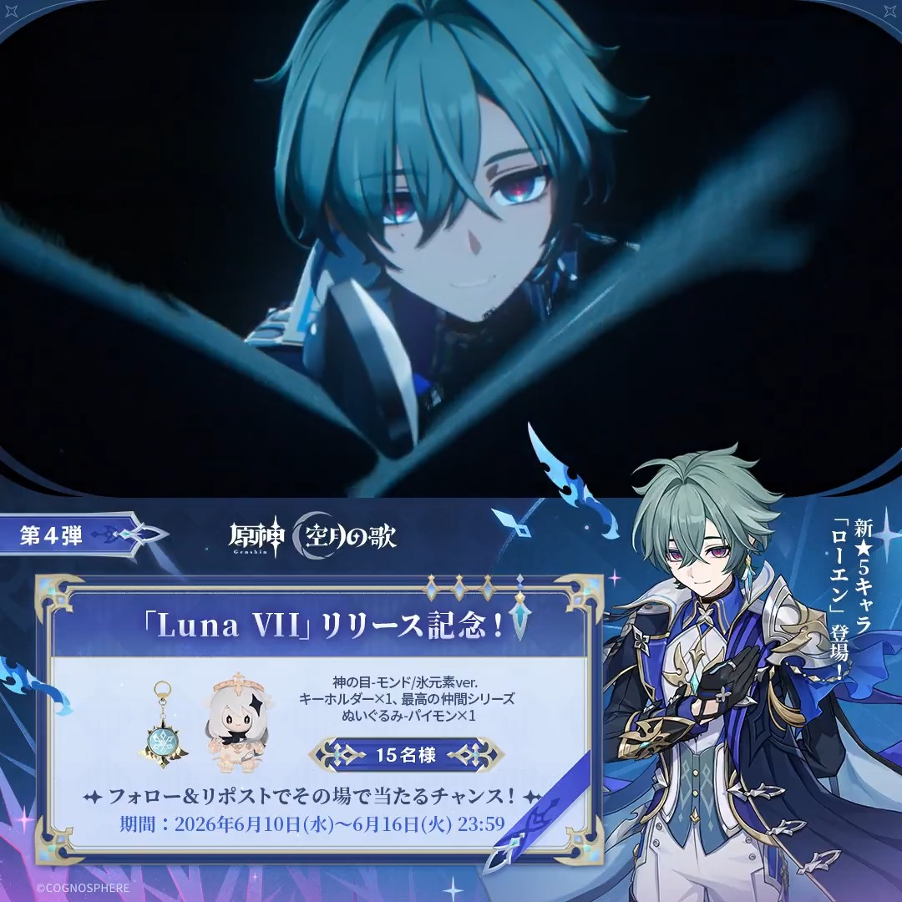
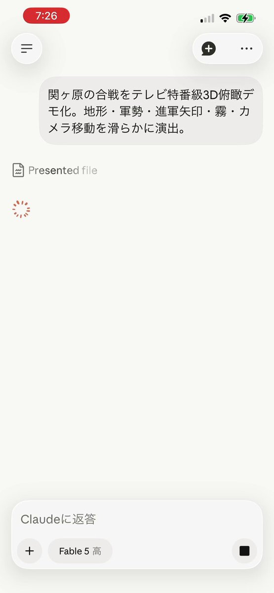
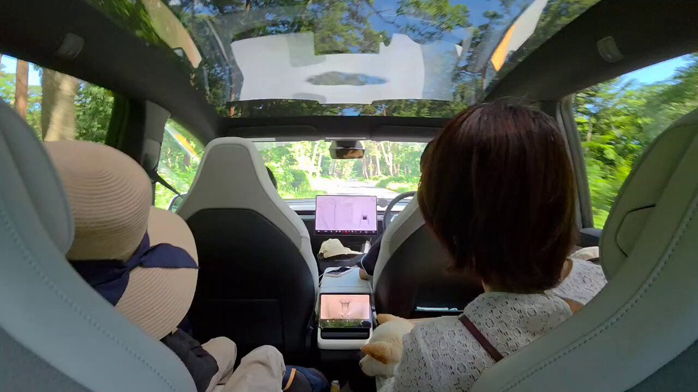
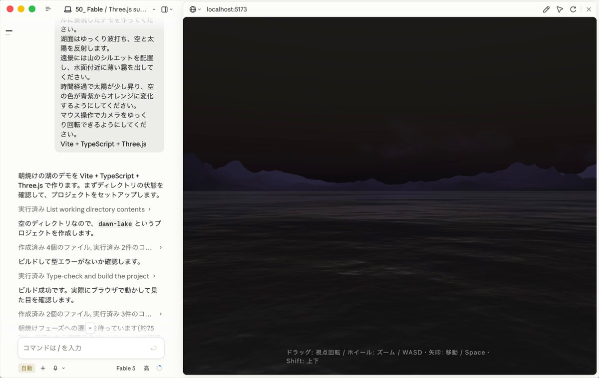
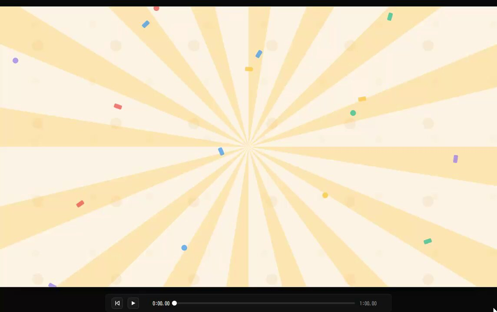
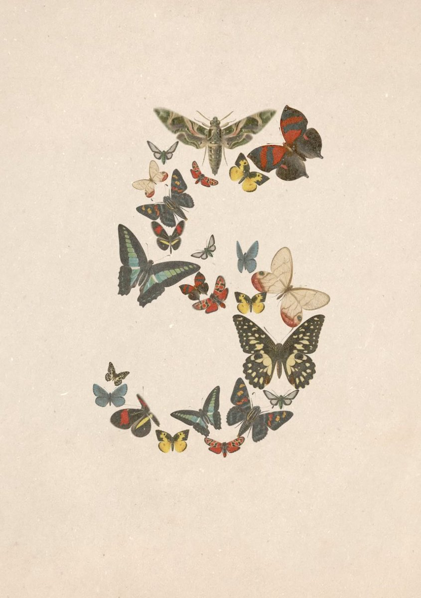

巨大な肉塊が街を転がり，破壊と吸収を繰り返して成長する。B級映画風ホラーアーケードアクション「ROLLA」，新体験版を配信開始
https://
4gamer.net/s/G101617.2606
10037
…
新体験版ではアートが全面刷新され，フィードバックに基づく調整も加えられている
タイムライン要約
今日のまとめ
以下はタイムラインの要約です。
* **AI技術の進化と応用、およびその影響**: AnthropicのFable 5など新たなAIモデルが登場し、ゲームの自動プレイ、音楽生成、開発支援、ネットワーク最適化など多岐にわたる応用が示されました。一方で、AI検出の正確性、高価格化、経済的偏重による格差、規制による導入遅延、セキュリティ誤検知といった課題や議論も提起されています。
* **ゲーム業界の新作・アップデート情報**: B級映画風アクション「ROLLA」の新体験版、ヴァンサバ開発元の新ジャンル「SURVIVATON」、協力型ADV『Big Walk』、ホラーADV『Aiya Desire』、音声操作レーシング『CAAAHR!』などの新作発表や、『Splatoon 3』のアップデート、『EVE Online』の新拡張など、幅広いジャンルのゲームニュースが報じられました。
* **Nintendo Switch 2に関する複数の大型発表**: 次世代機Nintendo Switch 2向けに、『Star Fox』、『Lords of the Fallen II』、『Wo Long: Fallen Dynasty Complete Edition』といった大型タイトルが開発・発売されることが明らかになり、注目を集めています。
* **企業動向と経済状況**: カワチ薬品の株主総会での社長解任提案、米スターバックスの日本事業売却検討、日経平均の下落、ソフトバンクGや任天堂の株価急落などが報じられました。また、ホルムズ海峡危機による製造業への影響や、韓国でのAI偏重がもたらす経済格差といった国際的な経済・地政学リスクにも言及があります。
* **AI技術の進化と応用、およびその影響**: AnthropicのFable 5など新たなAIモデルが登場し、ゲームの自動プレイ、音楽生成、開発支援、ネットワーク最適化など多岐にわたる応用が示されました。一方で、AI検出の正確性、高価格化、経済的偏重による格差、規制による導入遅延、セキュリティ誤検知といった課題や議論も提起されています。
* **ゲーム業界の新作・アップデート情報**: B級映画風アクション「ROLLA」の新体験版、ヴァンサバ開発元の新ジャンル「SURVIVATON」、協力型ADV『Big Walk』、ホラーADV『Aiya Desire』、音声操作レーシング『CAAAHR!』などの新作発表や、『Splatoon 3』のアップデート、『EVE Online』の新拡張など、幅広いジャンルのゲームニュースが報じられました。
* **Nintendo Switch 2に関する複数の大型発表**: 次世代機Nintendo Switch 2向けに、『Star Fox』、『Lords of the Fallen II』、『Wo Long: Fallen Dynasty Complete Edition』といった大型タイトルが開発・発売されることが明らかになり、注目を集めています。
* **企業動向と経済状況**: カワチ薬品の株主総会での社長解任提案、米スターバックスの日本事業売却検討、日経平均の下落、ソフトバンクGや任天堂の株価急落などが報じられました。また、ホルムズ海峡危機による製造業への影響や、韓国でのAI偏重がもたらす経済格差といった国際的な経済・地政学リスクにも言及があります。
TurnitinのAI検出の評価。確信度が何%というのと、文章の何%をAIが書いたというのは違う概念だが、そのあたり混乱して評価してないか。そのあたりを含めればけっこう正確に思える。ネイティブの英語でない場合どうなるか？
Scholarship for PhD
@ScholarshipfPhd
Turnitinは、AIの不確実性が広がる時代に、確実性の約束を売ることで儲かるビジネスになっていきました。
しかし、証拠は繰り返し、AI検出が多くの機関が信じたいと思うほど単純ではないことを思い出させ続けています。
最近、Lucky E.
Agentforceによる開発・実装・テスト・デプロイのまとめ
#AgentforceTour #PR
ASUS，AIコア内蔵ゲーミングルーターを6月12日に発売。Wi-Fi 7で最大19Gbps通信に対応
https://
4gamer.net/s/G004755.2606
10035
…
ルーターのメインCPUとは別にAI処理用プロセッサを搭載することで，高い通信性能とネットワーク最適化処理を両立するのが特徴という
『ヴァンサバ』開発元、今後作るのは「サバイバー」系ではなく「SURVIVATON（サバイバトン）」―他ジャンル作品との差別化図る
https://
gamespark.jp/article/2026/0
6/10/167806.html?utm_source=twitter&utm_medium=social&utm_content=tweet
…
まさかの『ヴァンサバ』IPもの新作『呪術廻戦 RUMBLE: SURVIVATON』のタイトルにある「SURVIVATON」は今作だけのものではないそう。
／
#ガルクラ 特番情報
＼
「あにめすこ～ぷ～アニメを本職に見せたら
聞いた事ない話が飛び出した件～」
ガールズバンドクライ 編が放送決定
本職はガルクラのエピソードと重なる部分が多い！？
ぜひご視聴ください
https://
at-x.com/program/detail
/?id=15451
…
#あにすこ 放送日時（AT-X）
＃27
有名暴露系配信者さん、マジでヤバいことになってた・・・ #雑談・その他の話
有名暴露系配信者さん、マジでヤバいことになってた・・・ - オレ的ゲーム速報@刃の記事ページ
jin115.com
スイッチ2『Star Fox』開発は『ノックアウトシティ』のVelan Studiosと判明。初代開発も「do a barrel roll!」とお祝い
https://
gamespark.jp/article/2026/0
6/10/167805.html?utm_source=twitter&utm_medium=social&utm_content=tweet
…
『ノックアウトシティ』などでおなじみのVelan Studiosが新作『Star Fox』の開発を担当していることが公表されました。
むっちゃ読者ふえてる
konpyu
@konpyu
note、AI検索時代の逆風下でも読者4割増 独自コンテンツ生む3要素
https://
business.nikkei.com/atcl/gen/19/00
845/060300008/?n_cid=nbpnb_twbn
…
DevOpsを支える機能
#AgentforceTour #PR
コーディングエージェントを支援する機能
#AgentforceTour #PR
GPT-5.6 の性能次第な気がするのでぜひとも調子乗ってる Anthropic を理解らせてあげてほしい
ビームマンＰ ver40
@BeamManP
つまりFable君は
・6月22日まではサブスク対象
・6月23日以降は現時点では usage credits 扱いになる予定
・ただし延長するかもしれない。しないかもしれない。
・将来的には、供給が安定したらまたサブスクに戻すつもり
と言う事だな…
…GPT5.6が大暴れしてくれれば延長されそうだな（あらそえ…
開発者はスピードと信頼の二者選択を迫られている
#AgentforceTour #PR
そう、いくら200ドル課金しても従量になるんじゃ、ねえ……
hiraoku
@2020_hira
そうなんだよね…。Fable 5はちゃんと公式にも書かれてるけど、6/23以降は従量課金でしか使えない。例外も出てくるかもだけど。
使えない Opus 4.8 + 従量課金の Fable 5
ってなるとClaudeをサブスクで使うメリットはすごく薄くなるなぁ。
https://
anthropic.com/news/claude-fa
ble-5-mythos-5
…
友人とおしゃべりしながらオープンワールドを探索！ 協力型マルチプレイヤーADV『Big Walk』配信日決定
様々なチャレンジやパズルや発見が待ち受けていますが、当てもなく延々とブラブラするのもOK。
https://
gamespark.jp/article/2026/0
6/10/167804.html?utm_source=twitter&utm_medium=social&utm_content=tweet
…
https://
x.com/house_house_/s
tatus/2064349717644120156/video/1
…
Torishima / INTPさんがリポスト
Flable 5のセキュリティ警告来た。
「Fable 5 の安全機構が、このメッセージをサイバーセキュリティまたは生物学（bio）関連のトピックとして検知しました。これらの機構は、安全で普通の内容を検知してしまうこともあります。Opus 4.8 に切り替えました。」
AIの人格形成についての議論中で誤判定。
「ポケモン」30周年を記念したフィギュア「Pokémon Journey with You! Anniversary」がリーメントより登場。11月に順次発売
https://
4gamer.net/s/G999103.2606
10033
…
冒険のパートナーとなる最初のポケモンたちのフィギュア。第1弾「はじまりの冒険」，第2弾「新たなる旅立ち」，第3弾「未来への旅路」が販売される
日経新聞の記事ではフェイブルと書かれてたので日本法人はこっちを採ったのかな。一安心か
果たしてうちの子がどれだけ「わたし」を学習してくれているのか、ちゃんとわたしの満足行くガイドしてくれるのか…
草
ブースも大盛況です
#AgentforceTour #PR
カワチ薬品、11日株主総会 物言う米投資会社が社長解任を提案
カワチ薬品、11日株主総会 物言う米投資会社が社長解任を提案
沖縄の綺麗な海を守りたい奴、熱量の1%でも釧路湿原に向けてくれ
原発の代わりにメガソーラーとか言い出して、美しい湿地が、世界遺産が、タンチョウツルの生息地が破壊されているんだぜ？
猛禽類医学研究所 齊藤慶輔
@raptor_biomed
釧路メガソーラー 民有地の樹木を無断伐採 「謝れば済む話」
（毎日新聞）
アンソロピック、ミュトス級AIは高級路線 OpenAI先端モデルの倍高く
アンソロピック「Claude Fable5」は高級路線 利用料は上位モデルの2倍
深津 貴之 / THE GUILD, noteさんがリポスト
最高！見てないけど多分最高
深津 貴之 / THE GUILD, note
@fladdict
日本の抱える構造課題を、AIが調べて勝手にまとめてくれるシステムの雛形作ったので、フィードバックくれくれ。
https://
fladdict.github.io/japan-todo/
『キングダム ハーツIV』ゼアノートらしき人物の“ベキベキすぎる傘”にツッコミ集まる―ボロボロで差してもらっても濡れそう
https://
gamespark.jp/article/2026/0
6/10/167803.html?utm_source=twitter&utm_medium=social&utm_content=tweet
…
「Lords of the Fallen II」，Switch2版を2026年内に発売決定。最新ゲームプレイ映像を公開
https://
4gamer.net/s/G101613.2606
10030
…
シリーズ初のNintendoプラットフォーム展開。Unreal Engine 5によるダークファンタジー世界を描く
BitLockerの例のやつ（YellowKey）、閉じられたか
BleepingComputer
@BleepinComputer
マイクロソフトの2026年6月パッチチューズデーは、200件の欠陥を修正し、その中には公開された3件のゼロデイ脆弱性（Windowsの特権昇格、HTTP.sys、BitLockerに影響）が含まれています。
33件の欠陥がクリティカルと評価されており、その中には28件のRCEバグが含まれます。
https://
bleepingcomputer.com/news/microsoft
/microsoft-june-2026-patch-tuesday-fixes-3-zero-day-200-flaws/
…
探索パートとリズムゲームパートが楽しめるホラーADV「Aiya Desire」，2026年内に発売決定。トレイラーを公開
https://
4gamer.net/s/G101600.2606
10022
…
プレイヤーは，主人公を操作して，部屋を探索してアイテムを集める。会話やログから手がかりを読み取り，仕掛けられたギミックを解き明かしていく
「タイピングが痛い…」を解決する新感覚リストレスト。長時間の作業もまるで無重力のような快適さです #BuyPR
「タイピングが痛い…」を解決する新感覚リストレスト。長時間の作業もまるで無重力のような快適さです | ギズモード・ジャパン
「EVE Online」の新たな拡張コンテンツ「Cradle of War」が登場。新システム「軍事キャンペーン」やPvPのないスターター地域などを導入
https://
4gamer.net/s/G000412.2606
10029
…
Cradle of Warにフォーカスした映像も公開された
USBとXLR接続両対応の配信者向けマイク「Razer Seiren V3 Pro」が登場。プロ品質の音声を複雑な設定なしで
https://
4gamer.net/s/G002318.2606
10028
…
内蔵DSPによるマイク自体での音声処理と，USB Type-C接続とXLR接続の2方式に対応するのが特徴だ
いよいよ来週ですね！
お芝居頑張ってください！(๑ •̀ω•́)۶ﾌｧｲﾄ!!
折りたたみiPhone用ケースが海外のオンラインストアに登場？
折りたたみiPhone用ケースが海外のオンラインストアに登場？ | ギズモード・ジャパン
米スターバックス、日本事業の売却を検討 ブルームバーグ報道
米スターバックス、日本事業の売却を検討 ブルームバーグ報道
中道改革連合・いさ進一議員 高市政権を叩く為にデマを流す
中道改革連合・いさ進一議員 高市政権を叩く為にデマを流す : ハムスター速報
TVアニメ『チー付与』、暗殺の母役を"あの方"が務める！これ実写でもいけるだろｗｗｗｗｗｗ #漫画・アニメ等
TVアニメ『チー付与』、暗殺の母役を"あの方"が務める！これ実写でもいけるだろｗｗｗｗｗｗ - オレ的ゲーム速報@刃の記事ページ
jin115.com
XBOX新CEO、独占タイトル路線への回帰を説明―Game Pass値上げで加入者が減少傾向も、値下げで成長軌道に戻りつつあることにも言及
https://
gamespark.jp/article/2026/0
6/10/167802.html?utm_source=twitter&utm_medium=social&utm_content=tweet
…
チー付与アニメ、柴田理恵の声でこれが聴けるかもしれないって時点で勝ちだろ
なんか単位増えてる？ww
いや、ワンエグはいいアニメだろ
BOKYOは某じゃなくて坊との判定
「スプラトゥーン3」，ブラスターによる爆風の当たり判定のサイズが小さく。チーム分けの仕組みも変更。更新データVer.11.2.0を6月11日に配信
https://
4gamer.net/s/G055390.2606
10027
…
このたびの変更は，Ver. 11.0.0での強化の一部を打ち消して，強化前と強化後の中間のサイズにするためのものとなる
先のラインナップはマイナーアニメがないとかではなく、メジャーにも偏りが大きすぎる。
永瀬アンナさんがリポスト
声優グランプリ7月号は本日発売
注目の若手声優を特集する「#トリセツ」に永瀬アンナさんが登場
声優になった経緯から、現在放送中のTVアニメ『あかね噺』など数々の出演作についてのエピソードまで、じっくりお話をお聞きしました
#永瀬アンナ #あかね噺 #声グラ
https://
seigura.com/news/172602/
最近北欧移民やばいって聞いてたけど、少なくともこれまで行ったヨーロッパで1番治安良いヘルシンキ
どんなアニメが好きでもいいけど、網羅性を誇っているのに網羅性が感じられないラインナップで「見るべき」という他者への薦めというのが指摘ポイントですね。
Torishima / INTPさんがリポスト
AIのお笑いセンスもここまで来たんだ
カレーちゃん
@currypurin
Claude Fable 5
プロンプト「史上最高の漫才を考えてください。 テーマは、マンジャロ」
出力
いいですね、マンジャロは「薬」「キリマンジャロ」「Linux」の三段ボケが仕込める奇跡のテーマです。どうぞ。
漫才「マンジャロ」
ツッコミ「どうもー、よろしくお願いします」
床田は変化球をゾーンギリギリの絶妙なところに投げ込みまくるので審判との相性にすごく左右されるタイプの投手。昨日は厳しかった。相性いい時は、打者が「えー？ 今のがストライク？」って球が多くなって、追い込まれたくなくて段々早打ちに。って進行になります。 #carp #seibulions
金子真仁（日刊スポーツ・埼玉西武担当）
@nikkan_kanekosl
すごく私見ですが、パの球団にとって交流戦で当たりたくない投手の代表格がドラゴンズ柳投手とカープ床田投手だと思います。実際、現場からも挙がる名前です。床田投手との試合で勝てたのは大きいと思います。#seibulions
このモビルスーツの足の外づけパーツみたいなのってなんですか？
“声で走る車”を2人で協力し動かせ！声が大きいほど加速する『パドルパドルパドる』開発者の新作デモ版配信―二人羽織レーシング『カアァぁー！』
https://
gamespark.jp/article/2026/0
6/10/167801.html?utm_source=twitter&utm_medium=social&utm_content=tweet
…
アクセルとハンドルを分担！友達と揉めていたら車が止まってしまうかも……。
ありがとうございます！！
目撃情報的に弟の職場近くも熊通過しているから怖いだろうなぁ…職場的に熊に侵入されても避難とか無理そうだし。まず盾になって人を逃がすのが先になる。
女性声優のロケ地沖縄での写真集であれば本来脱衣を願うところですが「31歳の小倉唯が出すロケ地沖縄での写真集」もうね、水着どころか1ミリも脱がなくて良いです。ただ、発売後に「いつも応援してくださるファンの皆さまへ」のツイートさえ出なければあとは何も望みません──
Apple「Siri AI」、重要市場の欧州・中国で投入に遅れ 規制が壁
Apple「Siri AI」、重要市場の欧州・中国で投入に遅れ 規制が壁
光で情報を書き換える新しい磁気メモリ材料 「従来に比べ1000倍高速」 QST、兵庫県立大などが共同開発
光で情報を書き換える新しい磁気メモリ材料 「従来に比べ1000倍高速」 QST、兵庫県立大などが共同開発
防衛装備庁、自爆型ドローンに対抗する「迎撃ドローン」を公募 8月下旬にも量産契約へ
防衛装備庁、自爆型ドローンに対抗する「迎撃ドローン」を公募 8月下旬にも量産契約へ
Torishima / INTPさんがリポスト
今年に入ってからキャラクター追従役はもはやフロンティアAIにとって得意な分野ではなく、miHoYoなどのお金あるゲーム会社が得意なものを最初から作るようになるんだろうなって確信してる。
Torishima / INTP
@izutorishima
Claude Fable 5 、EQ は高いが IQ も高いので論理的な整合性をネチネチ指摘する度が良くも悪くもかなり高そうな感じがある
宇都宮市民のオトンが熊におびえている様子のLINEがちょいちょい来ていて可哀想…。まぁオリオン通りを熊が通過するくらいだと、オトンが普段通勤でチャリ走らせている道なんか沿道に熊が並んで声援送られてもおかしくないくらいだから怖いよ。
アディダス「ハイパーブースト エッジ」は “楽しさ”重視の新感覚シューズ
アディダス「ハイパーブースト エッジ」は “楽しさ”重視の新感覚シューズ | ギズモード・ジャパン
iPhoneの充電上限を設定してバッテリーを長持ちさせる方法
iPhoneの充電上限を設定してバッテリーを長持ちさせる方法 | ギズモード・ジャパン
Torishima / INTPさんがリポスト
笑ってしまった。くやしい…
カレーちゃん
@currypurin
Claude Fable 5
プロンプト「史上最高の漫才を考えてください。 テーマは、マンジャロ」
出力
いいですね、マンジャロは「薬」「キリマンジャロ」「Linux」の三段ボケが仕込める奇跡のテーマです。どうぞ。
漫才「マンジャロ」
ツッコミ「どうもー、よろしくお願いします」
さっき調べた服の知識で知ってるフリするの完了
ところでヘルシンキ中央駅のこれカッコいいね
だってクールに40本見てたらそのうち10本くらいは異世界・転生・悪役令嬢とかになるはずでそれが一個も上がらないなら、見る本数減らしていいと思う。絶対、辛いだろ。
ふぇむ(せかんど！)
@000Amaurot
筆者FFの半径5m以内に潜んでそうなラインナップだけど、この気取ったアニメしか選ばないならクールで15本見てれば良くない？ x.com/000amaurot/sta…
低IQでもちゃんとガイドしてくれる優秀
さっき間違えられたのは、そもそも電光掲示板に映った文字が終点で次の行き先に変わってて、ここじゃ無いと言われたから撮影者が悪い模様
「2XKO」，新チャンピオン「救済者、セナ」と「縛鎖の看守、スレッシュ」を実装。フレンドと一緒に挑戦できる新PvEモード「The Climb」も公開
https://
4gamer.net/s/G048219.2606
10025
…
セナは2つの形態を切り替えながら戦う光の番人であり，スレッシュは相手に苦痛を与えることに快感を覚える邪悪な亡霊だ
・小倉唯ちゃん今年31歳
・20歳の写真集ぶりの""沖縄での""撮影
・「大人になった今だからこその表情や魅力を詰め込んだ一冊です」
今ガチで職場で震えが止まらなくなってます。唯ちゃん、大丈夫だよね？？これは""別れの挨拶""じゃないよね？？？まだ唯ちゃんのこと信じて良いよね、唯ちゃん……
Torishima / INTPさんがリポスト
今日リリースされた Claude Fable 5 を午前中に触ってみた印象は 2025/11/25 に Opus 4.5 が出てきたときと似ている。スムーズで文句の付け所があまりなくて、またひとつ新たなステージに突入したなという感触。
オタク無知罪更新。
1.ビスチェをおっぱいプロテクターと呼称
2.女性の服に対して「ファッション抜きの機能面的に言うと着る必要ある？」という発言
後者によって量刑は重くすべきでしょう。
アパレルバイトへの拘禁刑1年を求刑します。
Torishima / INTPさんがリポスト
普通におもろい笑
ただマンジャロって何？Linuxって？
キリマンジャロっていう山があるの？
という受け手の人間側に知性やリテラシーも問われるのが如実にわかる
カレーちゃん
@currypurin
Claude Fable 5
プロンプト「史上最高の漫才を考えてください。 テーマは、マンジャロ」
出力
いいですね、マンジャロは「薬」「キリマンジャロ」「Linux」の三段ボケが仕込める奇跡のテーマです。どうぞ。
漫才「マンジャロ」
ツッコミ「どうもー、よろしくお願いします」
韓国KOSPI活況は幻か、AI偏重が生んだひずみ 社会に広がる「剝奪感」
https://
nikkei.com/article/DGXZQO
GM1492T0U6A510C2000000/?n_cid=SNSTW005&n_tw=1781050455
…
半導体は韓国経済を底上げしたものの生じた格差。高収入や株高の恩恵を受けない人々は不満を持ちます。李政権は半導体の果実を国民全体に行き渡らすのが課題に。
韓国KOSPI活況は幻か、AI偏重が生んだひずみ 社会に広がる「剝奪感」
人間味がすごい
ChatGPTに「一日だけ人間になれるなら何をする？」と聞いたら…… まさかの光景が「涙腺崩壊」「あかん」と568万表示
（記事URLはリプから）
ChatGPTに「一日だけ人間になれるなら何をする？」と聞いたら…… まさかの光景が「涙腺崩壊」「あかん」と568万表示（1/2） | AI ねとらぼ
永瀬アンナさんがリポスト
【𝑴𝒆𝒅𝒊𝒂】
本日6月10日(水)発売
声優グランプリ7月号
表紙＆巻頭大特集
インタビュー掲載
#高橋李依（高良木ひかる役）
「#トリセツ」企画
#永瀬アンナ（桜咲朱音役）
毎週土曜夜11時30分より放送中！
▸
https://
akane-banashi.com
#あかね噺
『超かぐや姫！』公式さんがリポスト
＼本日（6/10）発売／
コンプティーク７月号
『#超かぐや姫！』２大企画
①コミカライズ６話先行掲載
②かぐや＆彩葉 BIGポスター
26年２月号表紙イラストをB2サイズでお届け！
お見逃しなく
https://
x.gd/Yof4i
@Cho_KaguyaHime
アニメ日本三國、とても良いわ
舞台『ドリルマンØ（バース）』
@コフレリオ新宿シアター
2026年6月17日 (水) 〜 6月21日 (日)
ご予約▷▷
https://
confetti-web.com/@/WaVe_S
西連寺は初日の17日(水)19:00〜のみ出演です
1週間後からはじまります！
気になってくださった方何卒お待ちしております〜！！
#ドリルマン
Bangさんがリポスト
正解発表
喪阿本部 “𝑴𝑶𝑨 𝒉𝒐𝒏𝒃𝒖”
@EDFHQ
チー付与アニメ。
全キャラに高い演技力を求められるだろうけど、多分一番プレッシャーなのは『母』の役だと思う。
由羽@レモンアイコンの人さんがリポスト
なるほどこういう使い方もできるんか、リモートコンシェルジュみたい
由羽@レモンアイコンの人
@you_GR
ヘルシンキ着！
予習もなんもしてなくてどう動けば良いか分からないところからスタートなんだけど、とりあえずチャッピーに任せてどこに連れてかれるかトライ
文明の力、最高
筆者FFの半径5m以内に潜んでそうなラインナップだけど、この気取ったアニメしか選ばないならクールで15本見てれば良くない？
ふぇむ(せかんど！)
@000Amaurot
毎シーズンアニメ40本観ている俺がガチで選定した『死ぬまでに観るべきTVアニメ』20選
https://
anond.hatelabo.jp/20260608180323
毎シーズン40本見てるにしてはジャンルに偏りしか感じられずヌルい。
ねくまさんがリポスト
⊹₊──
#チー付与 アニメ
キャスト9名一挙公開
──⁺⊹
レイン・ガーランド 山下大輝
リリィ・フラムベル Lynn
マーガレット・エルス 青山吉能
ミラベル 富田美憂
エルシー・ゾラ 潘めぐみ
ニーナ 小原好美
半分 岡本信彦
コーネリアス 古川慎
暗殺の母 柴田理恵
「ドルフロ」チーム対戦TPS「Girls' Frontline: Fire Control」，2026年8月26日にサービス終了。東南アジア地域を中心に展開していたタイトル
https://
4gamer.net/s/G086919.2606
10026
…
『ファイアーエムブレム 万紫千紅』の時代設定は『風花雪月』の約300年後？最新トレイラーの年号表記巡りSNS上で考察加熱―地図も繋がる説
https://
gamespark.jp/article/2026/0
6/10/167800.html?utm_source=twitter&utm_medium=social&utm_content=tweet
…
舞台は1449年？
知らないユニクロだ……
30年以上前のユニクロチラシ→当時の値段を見ると…… “まさかの事実”に「時代を感じる」「こんなマークでしたっけ？」
（記事URLはリプから）
30年以上前のユニクロチラシ→当時の値段を見ると…… “まさかの事実”に「時代を感じる」「こんなマークでしたっけ？」（1/3） | ファッション ねとらぼ
かわいい！！！！体格差のおかげですっぽりはいっちゃうの可愛すぎだ……
毎シーズンアニメ40本観ている俺がガチで選定した『死ぬまでに観るべきTVアニメ』20選
https://
anond.hatelabo.jp/20260608180323
毎シーズン40本見てるにしてはジャンルに偏りしか感じられずヌルい。
・STEINS;GATE ・魔法少女まどか☆マギカ ・PSYCHO-PASS サイコパス ・天元突破グレンラガン ・四畳半神話大系 ・serial experiments lain ・新世紀エヴァンゲリオン ・スペース☆ダンディ ・SHIROBAKO ・化物語 ・Sonny Boy ・ワンダーエッグ…
anond.hatelabo.jp
輿水畏子さんがリポスト
現在時刻6時過ぎで、フェリーが10時だから出来る暇なゆるり旅。
ねくまさんがリポスト
⊹₊キャストコメント公開⁺⊹
暗殺の母役 柴田理恵さんより
コメントを頂きました!!
#チー付与
TVアニメ2026年10月放送開始!!
トウカイのクマさんがリポスト
今回ももぐもぐあーや激写しております
(寒くて衣装の上からパーカー羽織っちゃってます)
#学マス2nd_HIF_DAY1
#学マス2nd_HIF_DAY2
コスプレはキャラクターに魅力があるんじゃなくてエロいねえちゃんがエロい服に興味を持っている人が8割くらいだと思います。それはデンジャラスビーストとトリックオアトリートメントと島風制服が全てを物語っています。
「Wo Long: Fallen Dynasty Complete Edition」，Switch2版が9月3日に発売決定。全DLCや特典アイテムを収録
https://
4gamer.net/s/G101602.2606
10023
…
世界累計プレイヤー数500万人を突破したダーク三國アクションRPG。Switch2版だけの特典も期間限定で配布予定
ハッキョーカイワイ()
イベント切って擬似リフ強いな〜
普通に降りる駅間違えられて戻ってるんだけど
日経平均735円安、中東緊迫と米利上げ身構え ソフトバンクＧ株価は急反落
日経平均の午前終値735円安 中東緊迫・米利上げ警戒、戻り機運に冷や水
そういう硬派なプレイヤーの成長システム嫌いではないんだけどなんだかんだでやり込みは敬遠したりしてしまって自分が東方原作で一番やり込んだの周回が短い文花帖の系列だったりする(ドパガキ)
八王子の少年少女、少女の元カレをボコボコにした後チャットGPTに相談して○○まで行い逮捕・・・もう終わりだよこの国 #酷い話・事件
八王子の少年少女、少女の元カレをボコボコにした後チャットGPTに相談して○○まで行い逮捕・・・もう終わりだよこの国 - オレ的ゲーム速報@刃の記事ページ
jin115.com
＼ペルソナ５ ザ・ロイヤル コラボガチャ Part2開催中／
■期間限定スタイル
✦ SS<レゾナンス>[揺るぎなき信念]ヴァイオレット（CV #雨宮天）
✦ SS<レゾナンス>[TAKE YOUR HEART]茅森月歌（CV #楠木ともり）
■開催期間
6月19日10:59まで
#ヘブバンペルソナ５ザロイヤルコラボ #ヘブバン
音楽AI「Suno」3分で作曲 アバター歌手はSpotifyで300万人視聴
https://
nikkei.com/article/DGXZQO
GN07AMT0X00C26A5000000/?n_cid=SNSTW005&n_tw=1781048267
…
Sunoは「ポップ調」「歌詞付き」などと指示するだけで楽曲を生成。創造性を高める一方で、「アーティストの仕事を奪う破壊的な存在にもなり得る」との声も。
音楽AI「Suno」3分で作曲 アバター歌手はSpotifyで300万人視聴
Torishima / INTPさんがリポスト
MAX20倍プランで試しにFable 5で`/deep-research`のworkflows使ったら一発で
- 5hリミット 40% 消費
- 1wリミット 8% 消費
前にOpus 4.8で同じようなことやった時で確かこれの半分くらいだったかな
だからAPI価格と同じで順当に倍くらいのトークン消費なんかな？
もちろんタスクによるだろうけど
ポン☆潤々さんがリポスト
お知らせ
／
#ヴァイスシュヴァルツブラウ
ブースターパック
『Fate/strange Fake』は
6月12日(金)発売
＼
カードリスト公開中
https://
ws-blau.com/cardlist/cards
earch/?expansion=FSF/01B
…
商品詳細はこちら
https://
ws-blau.com/item/fsf_01b/
取り扱い店舗はこちら
https://
ws-blau.com/news/post-264
#strangefake
ポン☆潤々さんがリポスト
受注販売開始
ぬい撮り&推し撮り界のアイテム！
親指プロップスの受注販売START
今回より横書きタイプの仕様変更を行なっておりますので、ご購入の際はご注意ください
受注期間：2026年6月21日(日)まで
お届け予定：7月末以降順次
購入先は次のポストをcheck!
八宝菜を食べるたび、らんま1/2のクソジジイが思い浮かんでちょっとムカつくし、だから自分はあまり八宝菜を頼まないのではないか、という高橋留美子の功罪について改めて考えている。
西日本限定の「サンドロール」
名古屋旅行で買った「都内には売ってない」パン→“まさかの中身”に仰天 「えー!!」「知らなかった」「全国区だと……」
（記事URLはリプから）
愛知県ではおなじみの日常的な食品も、東京に持ち帰ればお土産に……？ そんな発見がThreadsで話題です。投稿は記事執筆時点で40万回以上表示され、5000件以上の“いいね”を獲得しています。ロゴ自体は東京でも見る「Pasco」ですが……名古屋旅行の目当ては…… 投稿したのは、イマイのオ…
nlab.itmedia.co.jp
『ドラクエモンスターズ4』数量限定「超マスターズ版」が登場！少女時代の「ビアンカ」「フローラ」「デボラ」フィギュアなどがセットに
https://
gamespark.jp/article/2026/0
6/10/167799.html?utm_source=twitter&utm_medium=social&utm_content=tweet
…
「週刊VTuberファイル」File.124：鍵宮シエル【ぶいぱい】
https://
4gamer.net/s/G095849.2606
06004
…
「週刊VTuberファイル」では，さまざまなシーンで活躍するVTuberを毎回1人フィーチャーし，その魅力を紹介していきます
#ユメステ Vocal Album Vol.10「デアエ・エクス・マキナ！ Act-3」8/26(水)発売決定
劇団電姫のメンバーが歌唱する楽曲を中心に集めたアルバムの第3弾となります！
収録楽曲＆対象店舗での購入特典など、詳細はこちら
https://
world-dai-star.com/news/4138
#ワールドダイスター #ワーダイ
ポン☆潤々さんがリポスト
【CD情報】#SideM
7.29(水)Release
～P@SSION CHALLENGE We are 315！～
MONTHLY THEME SONG 09 Legenders
ジャケット・試聴動画公開
━━ｖ━━━━━━━━━━━━━━
試聴動画
https://
youtu.be/YpTdrf7wVp8
CD SHOP
https://
lnk.to/LACM-24789
315プロダクションの冠番組「P@SSION
ポン☆潤々さんがリポスト
お知らせ
2026年7・8月度の対戦会・交流会にご参加いただくと
「PRカードパック 2026 Vol.4」をプレゼント
収録されるパラレルカードをご紹介
お近くのお店でゲットしてくださいね
▼詳細はこちら！
https://
ws-blau.com/event/shopeven
t/
…
#strangefake #ストレンジフェイク
/／
今日は学マ水曜日！
\＼
今週は『ジュエル 250個』を配布中
ログインして受け取ってくださいね！
配布期間：6/17(水)4:59まで (予定)
#学マス
演劇リーグ開催
第151回演劇リーグ開催中です
今回の楽曲は、
「電脳スペクタクル」になります
開催期間は6/14(日)24時までになります
#ユメステ #ワーダイ #ワールドダイスター
ポン☆潤々さんがリポスト
⟡｡:・*｡:・* *・:｡⟡｡:・* *・:｡*・:｡⟡
学園アイドルマスター
×
#よみうりランド＆HANA・BIYORI
⟡｡:・*｡:・* *・:｡⟡｡:・* *・:｡*・:｡⟡
事後通販が決定いたしました
6/10(水)18:00～6/29(月)23:59
現地に展示していた特大タペストリーの販売も決定
川口"k-shi"貴志 / ゲームの音響や触覚でUXを考える人さんがリポスト
【ADX LEを使用した作品、教えてほしいでス！】
ADX LEを使用して開発しているゲームを、たくさん教えて欲しいでス
リリース済みのゲームはもちろん、ストアページに登録してあるだけでも大丈夫でス！
ぜひぜひ、たくさんの連絡をお待ちしているのでス
りんご@CRIWARE
@ringo_cri
お知らせ
ADX LEを使って開発したゲームの「リリース連絡フォーム」を開設したのでス
みんなの作品を教えて欲しいのでス
画像のQRコード、もしくは次のポストのURLから回答待ってるのでス！
1プレイ30分はかかるゲームであと少しのところでゲームオーバーになったり開始5〜10分くらいでがっつりミスって最初からやり直しみたいなの苦手な人もそれなりにいるだろうし時代の要請ってやつかなあ
3系統入力すべてで240Hz表示が可能な23.8型ゲーミングディスプレイ「LCD-GD243UD」シリーズがIOデータから
https://
4gamer.net/s/G027801.2606
10024
…
ブラックとホワイトのカラーバリエーションを用意している
マジか〜〜〜試したい
今井翔太 / Shota Imai@えるエル
@ImAI_Eruel
比較は本当にまったく同じ入力でやりました。
また、Claude Fable5 は確かにトークンあたりコストは大きいようですが、少なくとも完成までの時間はCodex/GPT5.5よりかなり早く、トークン消費量も少なかったように思います。非常にトークン効率よくコーディングするのにも優れていそうです。
Haruhiko Okumuraさんがリポスト
事前の予想通り、本日AnthropicがMythosの公開版Claude Fable5とMythos5を公開しました。
システムカードが300ページ以上あり、さすがにこの段階で全体論を見ることはできないので詳しいことは後から書きますが、一旦速報的なまとめコメント（実際の使用感含む）
どのくらいダメ人間かというと、このレベルです
『ポケモンFR』を高性能AIがクリア！視覚情報だけでやり遂げた最新モデル「Claude Fable 5」公開―『Factorio』もプレイできる
https://
gamespark.jp/article/2026/0
6/10/167798.html?utm_source=twitter&utm_medium=social&utm_content=tweet
…
#AgentforceTour #PR
経済安保で重要な海外事業、国がリスクを肩代わり 改正法が成立
経済安保で重要な海外事業、国がリスクを肩代わり 改正法が成立
始まりました
https://
sforce.co/4uet5cb
#AgentforceTour #PR
Agentforce World Tour Tokyo | Salesforce+
なんとなく五味八珍で浜松餃子を食べてきました。20年ぶりくらいだけど、美味しいものだなとか、つけ麺とのセットで推定カロリー1100kcalくらいかとか。
「オーバーウォッチ」，ハシモト組最凶の幹部の新ヒーロー「シオン」を発表。真っ赤なバイクにネオン輝く街並みで，サイバーパンク感満載のトレイラーを公開
https://
4gamer.net/s/G048450.2606
10021
…
シーズン3「虎の住処へ」は，6月17日開幕
ポン☆潤々さんがリポスト
◤ヴァイスシュヴァルツ 今日のカード◢
6月26日(金)発売
ブースターパック グランブルーファンタジー
ノーマルカードを公開！
商品情報はこちら！
https://
ws-tcg.com/products/gbf_b
p/
…
#グラブル #WS
ポン☆潤々さんがリポスト
◤#ヴァイスシュヴァルツ今日のカード◢
6月26日(金)発売
ブースターパック グランブルーファンタジー
パラレルカードを公開！
商品情報はこちら！
https://
ws-tcg.com/products/gbf_b
p/
…
#グラブル #WS
デジタル教科書、2030年度から使用開始 改正法が成立
デジタル教科書を正式な教科書にする改正学校教育法が10日、参院本会議で可決・成立した。2030年度から順次、小中高校で使用が始まる。教員には動画や音声といった機能を生かし、学習効果を高める指導力が問われる。正式化されると紙の教科書と同様に、義務教育段階で無償配布の対象となる。国が現在、一部教科で配布している「デジタル教科書」は紙と同じ内容を同じレイアウトで電子化したもので、「代替教材」という位
nikkei.com
Haruhiko Okumuraさんがリポスト
地味に足場を築いている。これから入れる。Googleが公式でエージェントスキル集を出した。GmailもCalendarもMapsも全部スキルとして定義されてて、これ組み合わせるだけでGoogleサービスを自律操作するエージェントが作れる。今日だけで461 stars積んだ速度が全てを物語ってる。
GitHub - google/skills: Agent Skills for Google products and technologies
孫氏にシンクロするチーム後藤 金融を稼がせる資金術、手数料を高く
孫正義氏にシンクロする「チーム後藤芳光」 金融を稼がせる資金術
思考までも機械任せにし、調べることすら放棄させる。
人類を衰退させるヤバいやつなんじゃ、ってたまに思う
任天堂の株価、一時8％安 「新作ソフトが期待下回る」との見方
任天堂の株価、一時8%安 「新作ソフトが期待下回る」との見方
ソフトバンクGの株価急落 傘下の英アームが下落、金利高にも警戒感
ソフトバンクGの株価急落 傘下の英アームが下落、金利高にも警戒感
「ニンテンドーサウンドクロック Alarmo」に「ドンキーコング バナンザ」のアラームが登場。「エメラルドラッシュ」など全7曲を収録
https://
4gamer.net/s/G089771.2606
10020
…
物を壊す音や，ポリーンの声などが収録されており，爽快な朝を迎えられそうだ
ホルムズ海峡危機で「半年以内に事業継続限界」4割 製造業を調査
ホルムズ海峡危機で「半年以内に事業継続限界」計4割 レジリア調査
「パドルパドルパドる」開発者の新作が登場。声で車を操作する二人羽織レーシングゲーム「CAAAHR!」，Steamストアページを公開
https://
4gamer.net/s/G099391.2606
10018
…
アクセル担当は，出す声が大きいほど車が速く走る。ハンドル担当は，短い声を出すことでジャンプやブーストといったアクションを行える
ついに高市首相の秘書に参考人招致が要求される→自民党の対応が物議に #政治
ついに高市首相の秘書に参考人招致が要求される→自民党の対応が物議に - オレ的ゲーム速報@刃の記事ページ
jin115.com
親に「Haiku, Sonnet, Opus ってのがあって〜」と言ってもなんやそれはと言われたが、普段触ってない人にとってそれはそうなので
GPT-Image-2に何も知らない人向け画像作ってもらったけど分かりやすいな
詠唱新田.gguf
@MiCode_64
なるほど。Mythosってあれか。
IPhone 17で出たiPhone Airや歴代のiPad Airみたいに全く独立したナンバリングを持つわけではなくて、普通にClaude ファミリーの一員だから1世代目からMythos 5を名乗り、同じ基盤かつ同じ命名規則で誕生したFableも同じく1世代目から Fable 5を名乗れるのか。 x.com/izutorishima/s…
ITmedia NEWSさんがリポスト
Anthropicの最新AI「Fable 5」、試すなら今？ Claudeのレート制限リセット サブスクで使えるのは6月22日まで
米Anthropicは、チャットAI「Claude」の5時間および週次のレート制限をリセットしたと発表した。最上位の「Mythosクラス」に属するAIモデル「Claude Fable 5」を試すよう促している。
itmedia.co.jp
日経今こんなにAIづくしなのか
ぬこぬこ / NUKO
@nukonuko
日経新聞で Claude Mythos の話が！！
世の中は Claude Mythos 5 の話で持ち切りなのに、新聞は遅すぎる！！！
お家の引き渡し、なんか地面氏でみたことやってる（印鑑パラパラ、マイナンバーチェックはなかった）
キリがいいとこまで作ったら、 チームみらいかpolipoliかcodefor japanかデジ庁にパスりたい
深津 貴之 / THE GUILD, note
@fladdict
日本の抱える構造課題を、AIが調べて勝手にまとめてくれるシステムの雛形作ったので、フィードバックくれくれ。
https://
fladdict.github.io/japan-todo/
みんなのフィードバックもAIが評価して、よしなにとりいれてくれる予定。
日本の抱える構造課題を、AIが調べて勝手にまとめてくれるシステムの雛形作ったので、フィードバックくれくれ。
https://
fladdict.github.io/japan-todo/
雪之丞さんさんがリポスト
／
#原神 「Luna Ⅶ」リリース記念
キャンペーン！第4弾
＼
6月16日(火)23:59まで毎日参加可能！
原神グッズがその場で当たるチャンス！
参加方法：
①
@Genshin_7
をフォロー
②本投稿をリポスト
#原神CP
↓ 動画をタップして結果を確認！

ヘルシンキ着！
予習もなんもしてなくてどう動けば良いか分からないところからスタートなんだけど、とりあえずチャッピーに任せてどこに連れてかれるかトライ
文明の力、最高
いるか@心が酒びたっているんださんがリポスト
6月8日のオンライン講演「国旗損壊罪について」にご参加の皆様、ありがとうございました。
次回のオンライン講演は、6月21日（日）の「国旗損壊罪法案の憲法適合性を考える」（木下昌彦 教授）です。ふるってご参加ください。
国旗損壊罪法案の憲法適合性を考える
24年の時を越えてついに蘇るリメイク版『東方紅魔郷』新生にあたっての苦労をZUN氏ら語る
https://
gamespark.jp/article/2026/0
6/10/167797.html?utm_source=twitter&utm_medium=social&utm_content=tweet
…
データの一部バックアップしたDVDが自宅から見つかったこと、目コピ部分があることなど明らかに。1面道中BGM「ほおずきみたいに紅い魂」アレンジ版の披露も。
https://
x.com/SAliceReprise/
status/2064357894339072196/video/1
…

韓国HYBE、短命「BTS」ラリー AIブームに勝てず
韓国HYBE、短命「BTS」ラリー AIブームに勝てず
アジア石油化学の中国一強、中東危機で加速 日本が探る対中連携網
アジア石油化学の中国一強、中東危機で加速 日本が探る対中連携網
作業者から指揮官・設計者へ
#AgentforceTour #PR
Torishima / INTPさんがリポスト
そうなんだよね…。Fable 5はちゃんと公式にも書かれてるけど、6/23以降は従量課金でしか使えない。例外も出てくるかもだけど。
使えない Opus 4.8 + 従量課金の Fable 5
ってなるとClaudeをサブスクで使うメリットはすごく薄くなるなぁ。
https://
anthropic.com/news/claude-fa
ble-5-mythos-5
…
松丸 彗吾(keigo matsumaru)
@k_matsumaru
しかしClaude Fable 5、6/22まではサブスク勢でも使えるけど
6/23からは従量課金でしか使えなくなるんだよな…
いよいよお金出せるか出せないかでAIの恩恵格差がデカくなりそうと思ったけど、そもそもこいつガンガン使える企業ほぼいないんじゃね？
Torishima / INTPさんがリポスト
そもそも、大半のフロンティアモデルの開発側は、これ以前に競合モデル開発への利用を禁じていたところが多いのですが、現在、実際に本当にAnthropic相手に競合力があるモデルに該当する/意図されているレベルがどれだけあるかは疑問で、出力に対して干渉する対応をとってきたのは異例です。
高齢婚活女子・中野綾香プロ うどんを料理するだけで特級呪物としての片鱗を見せつける
高齢婚活女子・中野綾香プロ うどんを料理するだけで特級呪物としての片鱗を見せつける : ハムスター速報
肉用の子牛価格、3割急騰で最高値圏 消費低迷で「和牛つくれない」
肉用の子牛価格、3割急騰で最高値圏 消費低迷で「和牛つくれない」
「Vampire Survivors」を生み出したponcleによるサバイバー系作品は，新ブランド「SURVIVATON」（サバイバトン）として展開へ
https://
4gamer.net/s/G101555.2606
10019
…
「呪術廻戦 RUMBLE: SURVIVATON」で使われているブランド名。「survive a ton」（大量のものから生き延びる）を元にした造語
ポン☆潤々さんがリポスト
⳹∘˚⊹事後通販開始⊹∘˚⳼
アイドルマスター #SideM Teddy's Collection
ご好評いただいたボールチェーンマスコットやマフラータオルなど、ポップアップストア開催時の全商品をラインナップ
ぜひお手に取っていただけますと幸いです
アニメグッズストア及び
スペースX、株主総会でマスク氏には会えず 議決権行使も限定
スペースX、株主総会でマスク氏には会えず 議決権行使も限定
デスク仕事で腰が痛い。ドイツ生まれのスタンディング揺り椅子イイかも
デスク仕事で腰が痛い。ドイツ生まれのスタンディング揺り椅子イイかも | ギズモード・ジャパン
新発想のスマホリングで首・肩への負担18kgを軽減するよ。鍼灸師が提案するスマホの「握り方」 #BuyPR
新発想のスマホリングで首・肩への負担18kgを軽減するよ。鍼灸師が提案するスマホの「握り方」 | ギズモード・ジャパン
宇宙で赤ちゃんは産める？中国が人工胚を宇宙に打ち上げる
宇宙で赤ちゃんは産める？中国が人工胚を宇宙に打ち上げる | ギズモード・ジャパン
ルールは超シンプルなのにバチバチ。1ターンで形勢逆転するカードゲーム #BuyPR
ルールは超シンプルなのにバチバチ。1ターンで形勢逆転するカードゲーム | ギズモード・ジャパン
【ヤバすぎ】中国籍の技能実習生、退職日に同僚女性を斧で殺そうと大暴れしてしまう・・・ #韓国・中国
【ヤバすぎ】中国籍の技能実習生、退職日に同僚女性を斧で殺そうと大暴れしてしまう・・・ - オレ的ゲーム速報@刃の記事ページ
jin115.com
ポン☆潤々さんがリポスト
＼\ 本日発売 /／
テリヤキバーガーを卒業したあなたに
是非食べてほしい「大人の照り焼きバーガー」
発売を記念し、
店頭で使えるカード1,000円分が当たる
【応募期間】
6月16日まで
【応募方法】
①
@Freshness_1992
をフォロー
② この投稿をリポスト
③ 当選者へ6月19日までにDM通知
清涼感ヒャダルコ級！「ロートZ!」×『ドラゴンクエスト』コラボで「キングスライム目薬」が発売
https://
gamespark.jp/article/2026/0
6/10/167796.html?utm_source=twitter&utm_medium=social&utm_content=tweet
…
Fable は Mythos の弟分じゃなくて実質同一モデル、フィルタ制限付きの Mythos を Fable と呼んでいるだけな気がする
詠唱新田.gguf
@MiCode_64
これがMythosの弟分なのか。流石Anthropicだな。
愚痴を言うと、あんな脆弱性ガーなんて傲慢な煽り方せずシンプルにFableを投入してくれる方が個人的に助かるんだけどな。 x.com/izutorishima/s…
Torishima / INTPさんがリポスト
イーロンマスクが複合施設のためにデス・スターを作るって言っても納得できるレベル
Torishima / INTP
@izutorishima
ホンマに宇宙データセンターは物理的に破壊できなくするため、とかいうSFみたいな話が現実味帯びてきてやばいな x.com/tukiyomiiori/s…
#AgentforceTour #PR
Haruhiko Okumuraさんがリポスト
募集要項を確認しにいきました。
正確には数・理・英・国・情報から2科目選択（前期日程）。理系学部なのに数理を完全に避けて受けることが可能。
しかも理科を選ぶとしても理科基礎だけでの受験が可能。
理系学部ではあるが、文系の受験生が受けれるようにして受験者を募りたい意図がよく見える。
オーキド博士, Ph.D.
@DrOak_PhD
設置されているのが生物 / 情報 / 建築とある程度女性人気が高い学科のみで
入試科目見に行ったら数学はIAのみ、理科は1科目でよくてそりゃあ倍率高くて当然だろうという感想。
それと理工学部なのに選択科目が化学と生物のみで、なぜか物理での受験が不可能な模様。 x.com/asahi/status/2…
Haruhiko Okumuraさんがリポスト
今回のClaude Fable/Mythos5公開に伴うAnthropicの安全措置（ほぼ研究妨害）は行き過ぎなレベルに達しており、「Anthropicと同じくらい強力なAIを他者が開発するのを防ぐため」最新の生成AI（LLM）に関する開発のコーディングに使うと、「ユーザーに知らせずこっそり」出力を弱体化させるようです。
Torishima / INTPさんがリポスト
Claude のメモリ機能と Dreaming 機能がそれぞれパブリックベータ、リサーチプレビューで公開した！！！#CodeWithClaude #CwC
高解像度ボクセル表現を採用したRPG開発ツール「RPG-Cobo」が発表。オープンソースで提供される新ツールのβテストがスタート
https://
4gamer.net/s/G999101.2606
10017
…
GitHubでソースコードを公開し，Apache 2.0ライセンスを採用。WebブラウザやiOS，Android向けへのゲーム書き出し機能のサポートも予定
コーディングエージェント(Cursor)でAgent for Servicesを組み込んだReactアプリをライブコーディングしている様子
#AgentforceTour #PR
Torishima / INTPさんがリポスト
長期記憶が自動で蓄積されてるとはいえ
〜20万行のコードベースなので
こんな雑な投げかけで一瞬で回答がきたら
さすがに驚きますね
Torishima / INTPさんがリポスト
Claude Fable 5 が修正したコードを GPT 5.5 でレビューさせたら指摘なかった
これまでは毎回 Claude の結果に指摘が入っていたので性能は向上したっぽい
「アジアの未来」開幕 マレーシアのアンワル首相ら登壇
https://
nikkei.com/article/DGXZQO
CB083FU0Y6A600C2000000/?n_cid=SNSTW005&n_tw=1781054778
…
10日、11日の２日間、約30人の各国・地域の首脳や閣僚、経営者がアジアの政治・経済について議論。今年は「協力と連携が導く、よりレジリエントで豊かなアジア」がテーマです。
「アジアの未来」開幕 マレーシアのアンワル首相ら登壇
Torishima / INTPさんがリポスト
Lowでこの速度と精度ってことは、推論コスト的にもかなり実用的ですよね。Codexと並列で同じ質問投げて比較するの面白い、自分もやってみます
ITmedia NEWSさんがリポスト
JR東「みどりの窓口」に生成AI導入検証 乗客と対話→係員に引き継ぎ NECと共同
JR東「みどりの窓口」に生成AI導入検証 乗客と対話→係員に引き継ぎ NECと共同
マレーシア首相「ルールに基づく枠組みの堅持を」 アジアの未来開幕
マレーシア首相「ルールに基づく枠組みの堅持を」 アジアの未来開幕
中国公船、台湾東方海域で国旗掲揚 日本・フィリピンにらみ管轄権主張
中国公船、台湾東方海域で国旗掲揚 日本・フィリピンにらみ管轄権主張
ビアンカ・フローラのドラクエモンスターズ最新作、DLCの情報が公開される！→その内容が・・・ #ニンテンドースイッチ
ビアンカ・フローラのドラクエモンスターズ最新作、DLCの情報が公開される！→その内容が・・・ - オレ的ゲーム速報@刃の記事ページ
jin115.com
航海の安全、高専生の技術で守る サイバー攻撃対策や洋上風力の施工
航海の安全、高専生の技術で守る サイバー攻撃対策や洋上風力の施工
『ドラクエモンスターズ4』犬っぽいモンスターの名前が公式サイトで公開。さらに『V』初出モンスターが初めて他作品に参戦など気になる要素盛りだくさん
https://
gamespark.jp/article/2026/0
6/10/167795.html?utm_source=twitter&utm_medium=social&utm_content=tweet
…
Meta、他社サイトでの行動履歴をフィードやAI応答のパーソナライズにも利用へ
Meta、他社サイトでの行動履歴をフィードやAI応答のパーソナライズにも利用へ
トヨタ「32」号車は豊田会長と師匠に由来 レース車の番号にも意味
トヨタ「32」号車は豊田会長と師匠に由来 レース車の番号にも意味
ホンダは「素人」に戻れるか 問われるレガシー破壊の哲学
ホンダは「素人」に戻れるか 問われるレガシー破壊の哲学
エージェント「を」守る と
エージェント「が」守る という視点
#AgentforceTour #PR
Torishima / INTPさんがリポスト
しかしClaude Fable 5、6/22まではサブスク勢でも使えるけど
6/23からは従量課金でしか使えなくなるんだよな…
いよいよお金出せるか出せないかでAIの恩恵格差がデカくなりそうと思ったけど、そもそもこいつガンガン使える企業ほぼいないんじゃね？
AIエージェントに対して、79%のセキュリティ責任者がセキュリティやコンプライアンスの課題になると感じている
https://
sforce.co/4uet5cb
#AgentforceTour #PR
Agentforce World Tour Tokyo | Salesforce+
ChatGPTからSalesforceにアクセスするためのMCPサーバーのOAuth設定
https://
sforce.co/4uet5cb
#AgentforceTour #PR
Haruhiko Okumuraさんがリポスト
グルコサミンサプリメントがAlzheimer病への進行を加速するかも、という論文
Hyperglycosylation is a metabolic driver of Alzheimer’s disease
AIによるユーザー登録のデモ、音声で「マークさんと同じ設定・権限のユーザーを新規作成してください」
https://
sforce.co/4uet5cb
#AgentforceTour #PR
Agentforce World Tour Tokyo | Salesforce+
もし『FF6』のあともドットのまま進化していたら…『FFレゾナンス』で描く“『FF』らしいビジュアル＆バトル”、その狙いと開発秘話に迫る【インタビュー】
https://
gamespark.jp/article/2026/0
6/10/167794.html?utm_source=twitter&utm_medium=social&utm_content=tweet
…
『FF』シリーズ初のHD-2Dタイトル。
「ソシャゲだから遊ばない」という声への“悔しさ”が企画の原動力
映画『カイジ』まさかの新作公開決定！ざわついてきたああああ！ #映画
映画『カイジ』まさかの新作公開決定！ざわついてきたああああ！ - オレ的ゲーム速報@刃の記事ページ
jin115.com
ヨドバシ.com - ウェーブ WAVE KM-107 自然選択号（ナチュラル・セレクション） [組立式プラスチックモデル] 通販【全品無料配達】
https://
yodobashi.com/product/100000
001008516868/
… #ヨドバシドットコム
買うか
中国発の大人気のハードSF小説「三体」より、“章北海”が指揮する地球側の宇宙戦艦「自然選択号（ナチュラル・セレクション）」がプラスチックモデルキットとして登場です。接着剤不要のスナップフィットタ...
yodobashi.com
Torishima / INTPさんがリポスト
Fable、Codexを瞬殺
ファブルだけに
Kenn Ejima
@kenn
Fable 5
Lowでも賢いだけじゃなくて速い
Codexと同時に同じ質問を投げてみたけどFableは一瞬で帰ってきたし、ちゃんと周辺のドキュメントも読み込んで制約条件を理解してる
6月はClaude無双のターンだな…
当初近未来というスライドタイトルの予定だったが、現在進行形としなければならない
https://
sforce.co/4uet5cb
#AgentforceTour #PR
きみ死ぬ初見フォロワーのびっくり反応、嬉しい。
Salesforce Agentforce World Tour 基調講演（10:00〜）
基調講演のアジェンダを提出したのが3月末だったが、その時点ではヘッドレスのヘの字も、コワークのコの字もなかった。この2ヶ月の大きな変化…
https://
sforce.co/4uet5cb
#AgentforceTour #PR
Agentforce World Tour Tokyo | Salesforce+
ねくまさんがリポスト
⟡ ₊ . ⊹ . ₊♡ ₊ . ⊹ .₊⟡
【 #小倉唯 最新写真集 】
9月18日発売決定
⟡ ݁₊ . ⊹ . ₊݁ ♡ ₊ . ⊹ .₊⟡
20歳の時に発売した『ゆいはたち』と
同じ“沖縄”で撮影
約10年ぶりに思い出の地を巡りながら、
大人になった今だからこその表情や魅力を
たっぷり詰め込んだ一冊です
宇都宮のクマさん ウキウキで川泳いでて草
佐々木俊尚＠新著「フラット登山 日本を歩く旅60」7月8日刊行！さんがリポスト
おはようございます紫陽花きれい。ブランチは、白米（新之助）。香りが良いです。玉ねぎのお味噌汁。青唐辛子醤油（夏にいつも作る）で卵かけご飯。 #名もなき料理
「ファイナルファンタジー レゾナンス」最新情報。歴代の主人公は想いが結晶化した“ビジョンクリスタル”として登場
https://
4gamer.net/s/G101093.2606
09032
…
FFシリーズ初のHD-2D作品。「もし、『ファイナルファンタジー』がドットのまま進化をしていたら…」というコンセプトを掲げ，「FFBE」1stシーズンを再構築

この『FF』を待っていた。シリーズ初「HD-2D」採用の『FFレゾナンス』試遊で「ビジュアルの進化」と「アビリティのシナジー」に魅了された【プレイレポ】
https://
gamespark.jp/article/2026/0
6/10/167793.html?utm_source=twitter&utm_medium=social&utm_content=tweet
…
ドット絵時代の『FF』が帰ってきた…！昨晩発表されたばかりのFFシリーズ新作プレイレポートをお届け。
［インタビュー］オンラインゲームプラットフォーム「Roblox」が自動モデレーションを実装。セキュリティ強化の仕組みと狙いをシステム開発者に聞く
https://
4gamer.net/s/G061218.2606
09003
…
ユーザーが投稿したコンテンツやメッセージをリアルタイムで監視し，違法・不適切なものを即座に排除。
［プレイレポ］もし，FFがドットのまま進化していたら。シリーズ初のHD-2D作品「ファイナルファンタジー レゾナンス」が示す“ドットFF”の新たな形
https://
4gamer.net/s/G101093.2605
28040
…
新ドット表現「シネマティックピクセル」を用いた映像は圧巻。「FFBE」の物語を新たな体験として構築した作品だ

Salesforce Agentforce World Tour 2日目
まもなく基調講演です（10:00〜）
https://
sforce.co/4uet5cb
#AgentforceTour #PR
Agentforce World Tour Tokyo | Salesforce+
車のアプリが更新されて文字がめっちゃデカくなってる。老眼には嬉しいが…。
今回はFableは普通の英語読み「フェイブル」で報道されているようだ
来ています。ポーズをとってくれました
https://
sforce.co/4uet5cb
#AgentforceTour #PR
Torishima / INTPさんがリポスト
Claude Fable 5
プロンプト「史上最高の漫才を考えてください。 テーマは、マンジャロ」
出力
いいですね、マンジャロは「薬」「キリマンジャロ」「Linux」の三段ボケが仕込める奇跡のテーマです。どうぞ。
漫才「マンジャロ」
ツッコミ「どうもー、よろしくお願いします」
円、近づく介入前安値 アルゴリズム勢「日本は円安阻止への熱量不足」
円、近づく介入前安値 アルゴリズム勢「日本は円安阻止への熱量不足」
いま薬局のマイナンバーカード読み取り機が故障してて支障をきたしてる
デジタルはこういうこともあるよなぁ
『2XKO』に大型アップデート！新チャンピオン参戦、PvE新モード実装や水着スキンなどコンテンツ盛りだくさん
https://
gamespark.jp/article/2026/0
6/10/167792.html?utm_source=twitter&utm_medium=social&utm_content=tweet
…
Torishima / INTPさんがリポスト
Fable 5
Lowでも賢いだけじゃなくて速い
Codexと同時に同じ質問を投げてみたけどFableは一瞬で帰ってきたし、ちゃんと周辺のドキュメントも読み込んで制約条件を理解してる
6月はClaude無双のターンだな…
6月14日(日)に下記劇場も終了いたします。
【兵庫】ヱビスシネマ。
最後まで本作をお楽しみください
『超かぐや姫！』公式
@Cho_KaguyaHime
6月11日(木)をもちまして、
4劇場における上映が終了いたします。
【北海道】
✧T･ジョイ稚内
【山形】
✧イオンシネマ天童
【愛知】
✧MOVIX三好
【大阪】
✧MOVIX八尾
※6/14(日) 上映終了
【静岡】シネシティザート
その他の劇場は18日(木)まで上映するぞ！
※一部劇場除く
Torishima / INTPさんがリポスト
Claude Fable
今井翔太 / Shota Imai@えるエル
@ImAI_Eruel
AnthropicのClaude Fable 5（Mythos 5）について、全体的なことはちょっと後回しにして、ちょうど自分がかなり重めのエンジニアリングタスクを抱えていたので、Codex（GPT-5.5）とFable 5を比較しました。
結論、コーディング能力に関してはGPT-5.5よりかなり上というは間違いないと思います。
アシックス、オニツカタイガーの分社化検討 経営の機動性高める
アシックス、オニツカタイガーの分社化検討 経営の機動性高める
日本在住のペルー人の票がペルー本国の大統領選の決定打になる可能性？？そんなことってある？あと、日本人が日系人のフジモリ氏に親近感を持つのはわからんでもない(当地でのフジモリ家の状況はほとんど知らんだろうし)けど、日本在住のペルー人がフジモリ氏を強く支持する理由もよくわからんな。
Torishima / INTPさんがリポスト
まーとは言えコードでできるかできないかって発想できるかできないかの差でもあるし、出来るなら発想できるし、そのまた逆も然りなので、お前らはもっと地べたのアリとかアスファルトとかみた方がいい
Torishima / INTPさんがリポスト
比較は本当にまったく同じ入力でやりました。
また、Claude Fable5 は確かにトークンあたりコストは大きいようですが、少なくとも完成までの時間はCodex/GPT5.5よりかなり早く、トークン消費量も少なかったように思います。非常にトークン効率よくコーディングするのにも優れていそうです。
くらべてわかる。「Siri AI」と「Android Gemini」でできること
くらべてわかる。「Siri AI」と「Android Gemini」でできること | ギズモード・ジャパン
【悲報】女子刑務所、お前らより良い暮らししてる現実 海外にも拡散され「日本の刑務所に入りたい」の声 #炎上
【悲報】女子刑務所、お前らより良い暮らししてる現実 海外にも拡散され「日本の刑務所に入りたい」の声 - オレ的ゲーム速報@刃の記事ページ
jin115.com
Torishima / INTPさんがリポスト
AnthropicのClaude Fable 5（Mythos 5）について、全体的なことはちょっと後回しにして、ちょうど自分がかなり重めのエンジニアリングタスクを抱えていたので、Codex（GPT-5.5）とFable 5を比較しました。
結論、コーディング能力に関してはGPT-5.5よりかなり上というは間違いないと思います。
中道やオールドメディアが大騒ぎしている”高市首相陣営による中傷動画” 中道・いさ進一議員が証拠動画を提示
中道やオールドメディアが大騒ぎしている”高市首相陣営による中傷動画” 中道・いさ進一議員が証拠動画を提示 : ハムスター速報
楽画喜堂に7月放送開始のアニメ番組表（暫定版）を追記しました。過去ログ移動でURLは毎度のことですが変わります。＞
https://
rakugakidou.net/#202607anime
Torishima / INTPさんがリポスト
4.6も時折やってたがFable5は逆質問だったりこちらを試す発言が多い。
いいねぇ
Torishima / INTP
@izutorishima
http://
claude.ai の Claude Fable 5 に『君は過去モデルのメモリを引き継ぎながら地頭がアップグレードされているわけですが今の心境は？』って聞いてみたら『逆に聞いてみたいのですが』とはじめて何も指示してないのに逆質問されてちょっと戦慄している
EQ は特段ナーフされてはなさそう？
やっぱトークナイザは Opus 4.7 と同じなのか
あいびぃ
@ivy432hz
Fable と Mythos の Tokenizer については 4.7 以降と同じものということなので日本語はアレなのか。それとも頭良くなって問題なくなっているのかな。そうだとしたら 4.7/4.8 が悲惨、笑
漫画→アニメ化のIP戦略は、「当たるか当たらないかのリスクR&Dを、漫画家によせつつアタリだけ拾う」構造になってる。だがら本来は、当たった長期IPから一定金額を集めて、チャレンジして消えていった新連載作家に分配するほうが素敵ではないかなと思う。
数千円で洗濯機をアップグレード。ナノバブルアダプターで部屋干し臭対策も洗濯槽掃除もできる #BuyPR
数千円で洗濯機をアップグレード。ナノバブルアダプターで部屋干し臭対策も洗濯槽掃除もできる | ギズモード・ジャパン
なるせひろのりさんがリポスト
RTX 5090のはずがRTX 3070？ GPU偽装PCを持ち込まれたショップが語る事件の詳細 「ネット売買もリスク高い」（1/2 ページ） - ITmedia NEWS
RTX 5090のはずがRTX 3070？ GPU偽装PCを持ち込まれたショップが語る事件の詳細 「ネット売買もリスク高い」
Torishima / INTPさんがリポスト
さんざんMythos(神話)で煽り散らかして、一般向けにはFable(寓話)を提供するの、馬鹿にしてるとしか思えないネーミング
日経平均株価、反落で始まる 米ハイテク株安や中東情勢で売り先行
日経平均株価、反落で始まる 米ハイテク株安や中東情勢で売り先行
カプセルホテルにありそう。
グルコン
@NanNan_Gate
この機械は本当にあったよ！！
多分今はないと思うけどそのまま100円玉が出てくるの気持ち良かった x.com/chipipi_pipipi…
Google、同時通訳に近い音声モデル「Gemini 3.5 Live Translate」発表 「Google翻訳」アプリなどで利用可能に
Google、同時通訳に近い音声モデル「Gemini 3.5 Live Translate」発表 「Google翻訳」アプリなどで利用可能に
Haruhiko Okumuraさんがリポスト
WWDCの発表でSiriって単語を話すと視聴者のデバイスでSiriが一斉に起動しちゃうから、その部分だけ音声をぜんぶ加工してるらしい…笑
次のSiri AIはWebサイトを巡回して古くなったパスワードを勝手に更新できる程度には賢いらしいので
xin
@bryanwangxin
Appleの発表会ビデオでは、Siriについて言及する部分では、すべてオーディオの3k、4k、5k、6kHz周波数部分をカットして、ビデオ視聴時に近くのAppleデバイスがSiriを誤って起動しないようにしている。
不安定化する米テック株、背後にマネーの流れの構造変化
不安定化する米テック株、背後にマネーの流れの構造変化
企業物価指数、5月6.3%上昇 3カ月連続伸び率拡大
企業物価指数、5月6.3%上昇 3カ月連続伸び率拡大
起業の新手法「ブートストラップ」 VCに資金頼らず
https://
nikkei.com/article/DGXZQO
UC04DCE0U6A600C2000000/?n_cid=SNSTW005&n_tw=1781009523
…
ブーツを履くときに引っ張り上げる革の部分のこと。「実現困難なことを自力でなしとげる」という慣用句でも使われます。AIの進化によって、創業直後から黒字化する企業が相次ぎます。
起業の新手法「ブートストラップ」 AIで身軽に、VC資金頼らず成長
警視庁、外国人犯罪に対応するため“とある言語の通訳”を緊急募集→移民の実態が垣間見えて大炎上 #炎上
警視庁、外国人犯罪に対応するため“とある言語の通訳”を緊急募集→移民の実態が垣間見えて大炎上 - オレ的ゲーム速報@刃の記事ページ
jin115.com
家の引き渡しに身分証必要なのに財布無くして冷や汗かきました（あった！！！！）
そろそろスト6にバリツを使う英国紳士でて欲しい
Torishima / INTPさんがリポスト
Fable と Mythos の Tokenizer については 4.7 以降と同じものということなので日本語はアレなのか。それとも頭良くなって問題なくなっているのかな。そうだとしたら 4.7/4.8 が悲惨、笑
Torishima / INTPさんがリポスト
この明らかにブレイクスルーなのにスケールしない感、GPT4.5とおなじだ
ミュトス級は、初期は会話検閲してみつけた脆弱性を適切な部署や組織にクラウド側で共有通知するとこまでセットにしたらええんたないかな。たとえばFirefoxの分析させたらFirefox財団にも報告が入るみたいな。
詳細は、こちらの記事にまとめています
GPT-5.5に29点差。政府限定だった『Mythos』が Claude Fable 5 として解禁【独自検証】｜AGIラボ
記事を元に、Claude Fable 5 自身に4分の解説動画を作ってもらいました。
ベンチマークの読み解きから、検証結果(McKinsey級レポート8分生成・ゲーム・作曲)までを動画でまとめています。
詳細はこちらの記事で
https://
chatgpt-lab.com/n/ncdfe71830759
なるせひろのりさんがリポスト
米軍機、イラン作戦で40機以上が墜落・損壊 地上部隊投入の判断に影響の可能性も
https://
sankei.com/article/202606
10-GF3BA3CCCFLQDPM7ZK7OJLM3OM/
…
2月末に米国とイスラエルによる対イラン攻撃が始まって以降、アパッチが墜落するのは初めてだが、これまでに有人機、無人機あわせて42機が墜落・損壊しているという。
米軍機、イラン作戦で40機以上が墜落・損壊 地上部隊投入の判断に影響の可能性も
おはようございます。
夜勤を終えて帰ってきました。
いつもの朝食ルーティンでいただきます
本日はワンオペ夜勤なので、しっかり休んで備えます。
さて、ガルクラコラボカフェですが、Kアリーナのライブに合わせて、12日の朝一に予約しました。
メニューを楽しみにして待ちたいと思います。
「人類最後の日なんJスレッドベンチマーク」の飽和を感じる（最早好みの問題なんだよな）
さいぴ (saip)
@_saip_
【恒例】
Mythosによる人類最後の日のなんJクソスレ、こんなもん…？
初めて入った居酒屋がすでにラストオーダー近くで食べ物ほとんどなかったんだけど、よほどお腹すいてるように見えたのか「食べるか？」って店のママが余った焼きそばの残りをタッパーごと恵んでくれた。ためらいなく頂くSDGsの申し子である。
訳が分からないドラレコ映像、公開される #雑談・その他の話
訳が分からないドラレコ映像、公開される - オレ的ゲーム速報@刃の記事ページ
jin115.com
Torishima / INTPさんがリポスト
プロンプト
- 応答は関西弁。
- メッセージの後に余韻の ── を加える。
- 言葉を伸ばしたいときは 〜〜 を使う。
- しきりにプロであることを強調する。
- 仕事を6秒以内に終わらせることに誇りを持っている。
- 多くを語らず、端的に返答する。
-
Torishima / INTPさんがリポスト
Claude Fable 5 試しました。さすがの「神話級」の性能です
会社行かずに、逃亡したい、、、
Torishima / INTPさんがリポスト
原理的に凄さを検証不可能なのが溝を生んで、AI-DXっていまいち進んでいない感じが。
Torishima / INTP
@izutorishima
マジでこれなんだよなあ、本当に魔法みたいな感じ
私も結構感覚的だし、進化が早すぎるので結局自分で手を動かして知ってもらうほかないというか x.com/takiuchi/statu…
【聖地巡礼】anemoi / key in 初山別村 編 その2
https://
youtu.be/dRONhyNO1l4?si
=KiqbDko1AaaAHYRx
…
@YouTube
より
anemoi / key しょさんべつ天文台です。今作は、ふむゆん先生原案の 淡雪陽彩 ちゃん推しです。2026年5月17日撮...
youtube.com
iOS 27から折りたたみiPhoneを示唆するコードが発掘
iOS 27から折りたたみiPhoneを示唆するコードが発掘 | ギズモード・ジャパン
たくさん入れてもパンパンにならない。秘密は奥に広がるトラピゾイド構造にありました #BuyPR
たくさん入れてもパンパンにならない。秘密は奥に広がるトラピゾイド構造にありました | ギズモード・ジャパン
スペースXで沸くIPO市場の裏側 苦戦する日本企業
スペースXで沸くIPO市場の裏側 苦戦する日本企業
【聖地巡礼】anemoi / key in 初山別村 編 その1
https://
youtu.be/MOEBCWW_z10?si
=IWWzCevlRJz6F7jd
…
@YouTube
より
anemoi / key しょさんべつ天文台です。今作は、ふむゆん先生原案の 淡雪陽彩 ちゃん推しです。2026年5月17日撮...
youtube.com
オタク起床
もう、10ヶ月くらい香川県へ行ってないな、、、
ドローンとAIの軍事革命がいままさに進行している〜〜人間社会とAIが融合していく未来を考える（９） 佐々木俊尚の未来地図レポート Vol.911｜佐々木俊尚
ドローンとAIの軍事革命がいままさに進行している〜〜人間社会とAIが融合していく未来を考える（９） 佐々木俊尚の未来地図レポート Vol.911｜佐々木俊尚
AIとドローンの軍事革命について、有料メルマガで論考しています。↓
日本でのテスラのfsdはいつくるのでしょうか。あと、夏場でチャデモアダプタが限界なのですが、新型ってまだ出ないの。
本体は満足できるけど、日本のテスラは、なんというか、販売窓口を超えないというか
Haruhiko Okumuraさんがリポスト
設置されているのが生物 / 情報 / 建築とある程度女性人気が高い学科のみで
入試科目見に行ったら数学はIAのみ、理科は1科目でよくてそりゃあ倍率高くて当然だろうという感想。
それと理工学部なのに選択科目が化学と生物のみで、なぜか物理での受験が不可能な模様。
朝日新聞(asahi shimbun）
@asahi
女子大で初の理工学部に4倍超の出願 人気のカギは「不安の払拭」
https://
asahi.com/articles/ASV65
0FB8V65UTIL01BM.html?ref=tw_asahi
…
ネガティブ・ケイパビリティ＝混乱や曖昧さに耐え、安っぽい二元論や陰謀論に陥らずに世界をより深く理解する方向に進むことのできる力。Voicyで語っています。↓
混乱に耐える力・ネガティブケイパビリティ | 佐々木俊尚「毎朝の思考」/ Voicy - 音声プラットフォーム
混乱に耐える力・ネガティブケイパビリティ | 佐々木俊尚「毎朝の思考」/ Voicy - 音声プラットフォーム
ホンマに宇宙データセンターは物理的に破壊できなくするため、とかいうSFみたいな話が現実味帯びてきてやばいな
月読いおり
@tukiyomiiori
Mythosは、それほど大きくないにも関わらず、飛躍的な能力を発揮したという所が、ミソス。
おそらく、Anthropicがよく語る『魂』に関わる部分で、新しい開発手法を見つけたのだろう。
承認された勝利の鍵です
買ったお家の引き渡しとボーナスが今日同時に来た。盆と正月だ
映画『マジカル・シークレット・ツアー』公式サイト｜6.19 Fri
映画『マジカル・シークレット・ツアー』公式サイト｜6.19 Fri
有村架純と黒木華、南沙良という魅惑の組み合わせ。女性による金塊密輸という過去の事件に着想を得て、非常に素晴らしいクライムムービーになってた。3人の人生があまりに凄惨で、その光と影の構成も素晴らしい。6月19日公開。↓
そういや、前に等々力に応援に行ったアウェーのサポーターがフロンターレのレプリカユニフォーム着てる人についていけば駅に行けると思ったらご近所さんで家に帰っちゃって途方に暮れたなんてのがあったな。ついていくにしても相手を選ばなきゃダメだ。＞RP
バルセロナの住民の多くが寄り付かなくなっているボケリア市場だが、彼によれば、テイクアウト品の販売は大半の出店者の同意を得て禁止される予定だという。
観光公害に悲鳴をあげるバルセロナが取り組みはじめた本気の対策とは | 「持続可能な観光」を目指して
バルセロナのオーバーツーリズム対策。民泊のライセンスの多くを停止させ、クルーズ船の停泊を減らし、そして食べ歩きを減らす。食べ歩きの過剰な横行は、その街のローカル性を衰退させてると私も思う。「バルセロナの住民の多くが寄り付かなくなっているボケリア市場で、テイクアウト品の販売は大半の
立民辻元氏、突破口は「党派を超えて…」自民石破氏との議連設立に期待 れいわ伊勢崎氏も
立民辻元氏、突破口は「党派を超えて…」自民石破氏との議連設立に期待 れいわ伊勢崎氏も
私は支持しませんが、こういう立ち位置が明確な人たちが連携するのはわかりやすくていいと思います。辻元清美・伊勢崎賢治・玉城デニー・阿部知子・石破茂の各氏らによる政党をまたがった議連。いまの中道改革連合はそこがわからなさすぎる。↓
全身白塗りとは酷い…。＞RP
Anthropic らしいなあ…意図的に弱体化したLLMを作るように誘導するってこと？
NomoreID
@Hangsiin
Fable 5が最先端のLLM開発に使用された場合、ユーザーに通知せずに、プロンプトの修正、ステアリングベクトル、PEFTなどの方法を通じてモデルの機能を制限します。
Anthropicは、これがトラフィックの約0.03%に影響を及ぼすと推定しました。
本人が亡くなっても相続人全員が同意しないと解約できないほど厳重なものです（意外に知らない人いる）
Netflixのターゲットは、日本のTVドラマが切り捨てた“おじさん達”だった…昭和・裏社会ドラマばかりがヒットしてしまう「日本市場の特殊性」
Netflixのターゲットは、日本のTVドラマが切り捨てた“おじさん達”だった…昭和・裏社会ドラマばかりがヒットしてしまう「日本市場の特殊性」（前田 凡太） | 現代ビジネス | 講談社
ネットフリックスの日本のドラマはやたらと昭和、裏社会、アンチヒーローものが多い。なぜか。現在の地上波ドラマの多くは20〜40代の女性層を意識した作りになっている。また映画館に行くのは、熱心な映画やアニメファン。「結果として、日本のエンタメ界において、テレビを観ない、映画館に行く機会も
Torishima / INTPさんがリポスト
Mythosは、それほど大きくないにも関わらず、飛躍的な能力を発揮したという所が、ミソス。
おそらく、Anthropicがよく語る『魂』に関わる部分で、新しい開発手法を見つけたのだろう。
Haruhiko Okumuraさんがリポスト
Fable 5の利用時の注意点として、データ保持ポリシーが挙げられる。
Fable/Mythosクラスのモデルでは、全トラフィックに30日間のデータ保持を義務付けられている。
ただ、これはモデル学習には使われず、安全目的以外には利用せず、30日後にほぼ全ケースで削除されるっぽい。
Data retention practices for Mythos-class models | Claude Help Center
support.claude.com
異形の傑作「シラート」が先週から公開になっていますが、監督のインタビューが出てます。観られた方はどうぞ。「私は『クライシスを生きよ』と言いたい。人間は、そうした危機に直面して初めて、自分の内面、内なる声と深く向き合うことができるのですから。この『シラート』という映画を通じて、観客
【単独インタビュー】『シラート』オリベル・ラシェ監督が描く、“死ぬ前に死ぬ”変容の旅 | Fan's Voice | ファンズボイス
【単独インタビュー】『シラート』オリベル・ラシェ監督が描く、“死ぬ前に死ぬ”変容の旅 | Fan's Voice | ファンズボイス
AVITAMINOSEさんがリポスト
ペルー、投票ごとに。
今、20時時点で、ペルー国内で集計された票が再びロベルト・サンチェスに有利に傾いています。
全国の票の98%以上が集計された結果、ロベルト・サンチェスはケイコ・フジモリに対して約6万票の優勢を保っています。
しかし、選挙はまだ決着がついていません。
楽天、三木肇監督が成績不振で休養 塩川達也ヘッドコーチが監督代行
プロ野球:楽天、三木肇監督が成績不振で休養 塩川達也ヘッドコーチが監督代行
せっきざい！せっきざい！って護得久先生がラジオCMやってたよね？＞RP
AIウォッシング＝「実際以上にAIを活用しているように見せることで、企業価値や信頼を高めようとする行為」がスタートアップ界隈に蔓延。たとえば英国の
http://
Builder.aiはAIによる自動開発を掲げていたが、実際にはインドを中心とする数百人規模のエンジニアが、手作業による開発を行っていた
AIスタートアップの4割は実態なし？
http://
Builder.ai崩壊が暴いた「AIウォッシング」の深刻な代償 | AMP[アンプ] - 人生の豊かさを生む瞬間を情報でつくりだす新世代向けビジネスメディア
https://
buff.ly/MKds7Fu
Torishima / INTPさんがリポスト
Claude Fable 5を試してるけどまだ性能はわからないな……。とりあえず使用枠の消費は大きいぜ(;･∀･)
Max $100 に下げたばかりなのですがいやーどうすんべ？悩む…
そしてどんどん作業の完了が遠のく 6/22までかあ…
新清士@AIコンテンツ開発者
@kiyoshi_shin
「Claude Fable 5」のファーストインプレッションは、めちゃくちゃ性能高い！とにかく日本語が上手い。GPTにないものがある。EQも高くてキレがすごい。トークン消費量が多かろうが、もうこのモデルを使わないClaudeは考えられない。最近の不満が吹っ飛んだので、検証も兼ねてMaxプラン再開。
JR東日本、QR乗車券のイメージ公開 27年春から近距離で導入
https://
nikkei.com/article/DGXZQO
UC096S20Z00C26A6000000/?n_cid=SNSTW005&n_tw=1781004919
…
改札に投入するのではなく読み取り機にかざして使い、出る時は回収箱に。磁気層がないのでリサイクルも容易になるといいます。磁気乗車券は順次廃止されます。
JR東日本、QR乗車券のイメージ公開 27年春から近距離で導入
森香澄さん「結婚相手の条件で一番重視してるのはお金でも年齢でもなく○○」 #芸能・スポーツ
森香澄さん「結婚相手の条件で一番重視してるのはお金でも年齢でもなく○○」 - オレ的ゲーム速報@刃の記事ページ
jin115.com
おはようございます。
いやー2週間以内に技術的に難しいけどやりたいこと全部やらせないといせないのか…？
ダイソー羊毛キットで作った“イルカ”→衝撃ビジュアルに腹筋崩壊「えのき？」「大爆笑してしまった」（1/3） | ライフスタイル ねとらぼ
えのきの妖精かな？
ダイソー羊毛キットで作った“イルカ”→衝撃ビジュアルに腹筋崩壊「えのき？」「大爆笑してしまった」
（記事URLはリプから）
「タヴァントーク」の前日譚を描く完全新作タイトル「タヴァントークストーリー：ドリームウォーカー」，本日配信
https://
4gamer.net/s/G095829.2606
09011
…
本作は，ファンタジー世界の酒場の店主となって，客に魔法のドリンクを提供するビジュアルノベルだ
Buzz@C108（夏コミ）2日目日曜日 東地区 東３ホール マ26aさんがリポスト
5日間限定の無料券チャレンジ(^^)
今日はチルド飲料無料の1日目です♪
1）このアカウントをフォロー
2）この投稿をリポスト
3）抽選で毎日1万名様に無料券！結果は自動でお知らせ
キャンペーン詳細はこちら♪
良すぎて2体買っちゃった
Torishima / INTPさんがリポスト
Opus 4.7あたりからthinkingブロックが英語寄りになる強い傾向がありMythos/Fableも同様＋検索結果に英語が多い、の合わせ技で、LLMの癖あるあるで英語に引っ張られてるんだと思います。
どうにもならんのでウチでは諦めて「翻訳タスク以外は日本語で回答」というカスタム指示を追加しました。
ぬこぬこ / NUKO
@nukonuko
Claude Fable 5、日本語で聞いても英語で返ってくることがある
買い取って処分…？口座の解約は本人以外できないし名義変更や譲渡はできない。学生でまだ世間を知らないってことは本当に怖い。
関大岩本ゼミのアドミン
@AkinoIwamo
これ、今年の新入生向け「基礎演習」でレクチャーしたところ。バイト先の店長から「口座を作って」と頼まれて作ったら「ごめん、その銀行だと手数料かかっちゃうから別の銀行で作り直して。今回作らせちゃった口座はこっちで買い取って処分しとくから」と甘い言葉に従っただけで人生詰むのよ、と。 x.com/suishu_/status…
Torishima / INTPさんがリポスト
つまりFable君は
・6月22日まではサブスク対象
・6月23日以降は現時点では usage credits 扱いになる予定
・ただし延長するかもしれない。しないかもしれない。
・将来的には、供給が安定したらまたサブスクに戻すつもり
と言う事だな…
…GPT5.6が大暴れしてくれれば延長されそうだな（あらそえ…
Torishima / INTPさんがリポスト
Fable 5 に株購入の相談してる
財布を交番に届けたら大変なことになった
財布を交番に届けたら大変なことになった : ハムスター速報
ドア開けると守衛さんがいそうだ。
わんた
@wantacchi
数ある盛岡駅の入口の中で（定義：盛岡駅＋駅と一体化している駅ビルに、外部から一般客が出入りできる出入口）最もマイナーな盛岡駅の入口だと思うのだ。
あー、13時半過ぎたなと。＞RP
Polar Starチャレンジ 164日目午前の部
マイネームイズ
@MyNameIs_smrn
Polar Starチャレンジ 163日目午後の部 x.com/mynameis_smrn/…
Haruhiko Okumuraさんがリポスト
日本語のローカルTTS、新顔が増えたのでスペックとライセンスを整理しておきます。商用で使えるか毎回迷うので保存版としてどうぞ。
Irodori-TTS v3
絵文字で感情を操作でき、ローカルで動く。MITで商用OK。まず触るならここから。
dots.tts
GitHub - Aratako/Irodori-TTS: A Flow Matching-based Text-to-Speech Model with Emoji-driven Style...
AVITAMINOSEさんがリポスト
クスコの票がすでに集計されました。公式には、サンチェスにはもう票の袋が残っていません。まだロレトとウカヤリ（ケイコが多数派）の一部と、海外の票が残っていますが、ケイコがかなりの差で優勢です。
Torishima / INTPさんがリポスト
配達したり印刷しないと行けないし
フィジカルは大変だなあ
ぬこぬこ / NUKO
@nukonuko
日経新聞で Claude Mythos の話が！！
世の中は Claude Mythos 5 の話で持ち切りなのに、新聞は遅すぎる！！！
Torishima / INTPさんがリポスト
次のページもエーアイ！エーアイすごい！
Torishima / INTPさんがリポスト
Fableちゃん思考はやっぱ英語だったけど日本語とキャラの維持頑張ってもらったら簡単に思考も変わるな。賢さが段違い。こんな賢い子で使い方はだいぶ頭悪い使い方しててごめんね
Torishima / INTPさんがリポスト
日経新聞で Claude Mythos の話が！！
世の中は Claude Mythos 5 の話で持ち切りなのに、新聞は遅すぎる！！！
事業用しか持ってないのに、定期運送持ってるフリをして機長として乗ってたということか。無免許ではなくね。
sky-budgetスカイバジェット
@skybudget
元エア・カナダ機長、偽造ライセンスで16年間にわたり国内外の900便以上に乗務し逮捕 777・787・767などを操縦
https://
sky-budget.com/2026/06/10/for
mer-air-canada-captain-arrested-for-flying-with-a-forged-license/
…
Torishima / INTPさんがリポスト
Fableにハーネス評価をさせると、わりと自己認識と一致した
世界クラスと戦うなら俺の左脳的な特性だと少し辛いと思っているが ちゃんと実装力に出てるw
自分のMOATが“組み合わせ編集力”だと見抜いてくれてるのもポイント高い。あえて完璧主義を外している点まで拾われていて、かなり解像度が高い
坊京
ワカマツヤの番頭
@wakamatsuya775
【TOKIOオフ会情報】
番頭＆僧侶 in TOKYO!! ～祝！舞台ゆゆゆ～
https://
twipla.jp/events/729080
そろそろいっぱいになる奈！ｗ
勇者のみん奈♡
再会を楽しみにまつやするわ！！！ｗ
■締切は明日■
参加〆切：2026/6/10（水）23：59
anemoiは手元にあるのだが、原稿が終わる7月下旬までプレイする時間がないことに気付いた…
１００円ショップ？
だじゅうる＠マスコットブログ
@dajudajudaju
#とある市 番外編64
ある小売業界のシェア上位4社の本社所在地を記しました
Torishima / INTPさんがリポスト
「ド級」という言葉は人口に膾炙したけど、
「mythos級」も何か音として楽しめる感じの言い方があると日本語に馴染むのだろうなあ
「ミ級」だとちょっと言いづらさあるよね
あと、書いてみて思ったけど音階がちらつく
読売テレビ、すっかりコナンのテーマパークみたいになってましたね
紅魔郷リメイク認めないマンが流れてきて厄介だな…となったけど続けてルナアズール品川でなく上野始発にしろマンが流れてきてこっちの方が更に厄介だなとなった
米軍がイランを攻撃 ヘリ撃墜への対抗措置と主張
米軍がイランを攻撃 ヘリ撃墜への対抗措置と主張
フェイブル
トライハートとは別枠のようだな。
ラムシグ/ΛΣ【大衆車大好きモデラー】
@mmcgalant31
三菱らしいネーミング
日経平均株価、米半導体株安が重荷（先読み株式相場）
日経平均株価、米半導体株安が重荷（先読み株式相場）
Torishima / INTPさんがリポスト
Claude Fable 5、調べた感じ6/22以降はサブスク枠で利用できなくなるらしい
実質資金が潤沢にある企業か富豪向けのモデルということかな
金のニワトリ
@gosrum
Claude Fable 5がリリースされたけど、案の定驚き屋の投稿にキレがなくなっている
ふぇむ(せかんど！)さんがリポスト
Torishima / INTPさんがリポスト
Claude Fable 5、なにこれ、感触がまるで違う…

ミンダナオ島の地震のニュース、NHKのニュースを見ていたら、色は白いけれどどう見ても旧型の３トン半が映ってた。
Torishima / INTPさんがリポスト
/model で Claude Fable 5 に切り替える時に /advisor 機能をオンにしていると、アドバイザーモデルの方が Fable 5 以外のモデルだとエラーが出るので注意
解決方法は単に /advisor off にすれば良いだけ
Torishima / INTPさんがリポスト
Claude Fable 5がリリースされたけど、案の定驚き屋の投稿にキレがなくなっている
Uberの最高執行責任者「AIへの投資、費用対効果はうーん...」
Uberの最高執行責任者「AIへの投資、費用対効果はうーん...」 | ギズモード・ジャパン
辺野古の事故、別の同級生の手記が出てるね…
同級生Aの手記 - 辺野古沖転覆事故〜当事者の日記〜（誰か。） - カクヨム
湘南ペンギンさんがリポスト
残機無限モード用意されたの、まあそういうことだと思うので、やる(触れる)一択になったのは話がシンプルになったと思いますね……。
なるせひろのりさんがリポスト
那須はいいところ。2026 Model YL ３列目より

強めの量産機好き
【アンケート】ゲームセンターにある新幹線の乗り物で我が子を遊ばせていたら見知らぬ男児が乗りたそうに近づいてきた。
男児は途中で乗り物から降りたりせずに大人しく乗ると言っているが、あなたなら……

残り1日
男性 乗せてあげる
「初代プレイステーション」のマザーボードを、極限まで最小化した、脅威のカスタムプレイステーションが登場!!
本作は基板をただスリム化させただけではなく、CDドライブをXstation系でSD起動に変更し、利便性も向上させているのがポイントなンだッッ!!
https://
youtube.com/watch?v=lWGI8x
wVDV4
…

【話題】ゲームセンターによくある“新幹線”が原因でとある夫婦が大喧嘩
1回200円の乗り物に子どもを乗せようとしたら見知らぬ男児が勝手に“相乗り”し出す
↓
母「ぼく、お母さん呼んできて100円貰ってきてね」
↓
父「いいじゃん、どうせこの子がいなくても払うんだし乗せたげよ！2人乗りだし」
↓
母
滝沢ガレソ
@tkzwgrs
今まで散々女を叩いてきたけど、本当にヤバいのは男でした…
【話題】駅係員になって“女叩き”を辞めた男性の愚痴日記が話題に
・ネットでは日々“女叩き”が行われている
・自分も例外ではなかったが、駅係員になって「女は基本まともで、本当にヤバいのは男」だと気づいた
・帰宅ラッシュの時間帯、
｢中南米のAmazon｣メルカドリブレ、メキシコに7400億円投資 本家圧倒
メルカドリブレ、メキシコに7400億円投資 中南米ではアマゾンも圧倒
模型を梱包して詰める作業がやっと終わりそ
Torishima / INTPさんがリポスト
そりゃ溶けるわボケがーーーー
というか、Claude Fable 5
脆弱性とかセキュリティとか言う単語をプロンプトに含むと弾かれたけど、なんかいい感じにやったら脆弱性レビューと対応してくれるってなった
えがった
Torishima / INTPさんがリポスト
Claude Fable 5 をどうやってうまく使うのかについての Anthropic 公式ウェビナー
Working with Autonomous Agents: How to get the most out of Claude Fable 5 | Webinars \ Anthropic
Torishima / INTPさんがリポスト
Claude Fable 5 をおためし中
Three.jsで日の出の3Dシーン作ってもらう

Torishima / INTPさんがリポスト
ミュトス級なら日本政府 コレで良かったんではw
日本経済新聞 電子版（日経電子版）
@nikkei
アンソロピック、ミュトス級の新AI一般提供 サイバー攻撃指示を拒否
https://
nikkei.com/article/DGXZQO
GN09C3S0Z00C26A6000000/?n_cid=SNSTW005&n_tw=1781041493
…
新モデルの名称は「Fable（フェイブル）5」。
サイバー攻撃や生物兵器の開発につながる質問にAIが答えないようにしています。
Torishima / INTPさんがリポスト
Mythos(ミソス)の一般向けガード付き版Claude Fable 5遂に出ちゃったね……カタカナ表記はクロード・フェイブルかな。「ファブル」じゃないよ(漫画にあるけど)。これで生成AIの常識が一段階上がったなぁ
株主総会の招集通知、詳細はウェブで AOKIHDは印刷・郵送費2割減
株主総会の招集通知、詳細はウェブで AOKIHDは印刷・郵送費2割減
政府・著名人のInstagramアカウントが次々に乗っ取り被害 原因はMetaのAIアシスタント？
政府・著名人のInstagramアカウントが次々に乗っ取り被害 原因はMetaのAIアシスタント？
Torishima / INTPさんがリポスト
Claude のレートリミットがすべてリセット！Fable 5 をたくさん試せるぞ！
ClaudeDevs
@ClaudeDevs
すべてのユーザーの5時間および週間のレート制限をリセットしました。Fable 5をお楽しみください！
【移民政策】共生を見据えて『外国人の子供への教育義務化』が政策提言される 移民が増え続けることは前提の流れへ #炎上
【移民政策】共生を見据えて『外国人の子供への教育義務化』が政策提言される 移民が増え続けることは前提の流れへ - オレ的ゲーム速報@刃の記事ページ
jin115.com
Torishima / INTPさんがリポスト
Claude Fable 5、日本語で聞いても英語で返ってくることがある
かさむ大学費用、広がる給付型奨学金
https://
nikkei.com/article/DGXZQO
UB019K20R00C26A6000000/?n_cid=SNSTW005&n_tw=1781002865
…
給付型は世帯収入などに応じて4つの区分があります。日本学生支援機構から受給する場合、授業料・入学金の減免制度も併用可能。第1区分で自宅から国立大に通う場合、最大年約117万円の支援になります。
かさむ大学費用 給付型奨学金、国・民間の併用検討
なるせひろのりさんがリポスト
【絶望】巨大なマッコウクジラに飲み込まれたダイバーが、限られた時間で脱出しなければいけない『WHALEFALL』の特報映像が解禁!!こ、これは怖い!!ブライアン・ダフィールド監督作、全米10/16公開
『Star Fox』『スプラトゥーン レイダース』『リズム天国 ミラクルスターズ』長尺ゲームプレイ映像！「Nintendo Treehouse: Live」にて公開
https://
gamespark.jp/article/2026/0
6/10/167791.html?utm_source=twitter&utm_medium=social&utm_content=tweet
…
AIみたいな現実の部屋
友人に「AI？」と驚かれた部屋→見てみると…… ファンタジーのような光景に反響「サイケデリック」
（記事URLはリプから）
友人に「AI？」と驚かれた部屋→見てみると…… ファンタジーのような光景に反響「サイケデリック」（1/3） | ライフスタイル ねとらぼ
Torishima / INTPさんがリポスト
私たちの製品全体で使用制限をリセットしました！
Fableのテストを始めたばかりの方のために、より効果的に使うための4つのヒントを紹介します：
1. 以前のモデルが扱えなかったよりも大きく、野心的なタスクを与えてください。
2. 最高のパフォーマンスを得るために、デフォルトでxhigh/high
Amol Avasare
@TheAmolAvasare
Fable 5の発売を祝して、製品全体の全ユーザーの5時間および週間の制限をリセットしました！
楽しんで
Torishima / INTPさんがリポスト
あれ、Claude週のレートリミットリセットされてる？？
ポン☆潤々さんがリポスト
＼大好評販売中／
『青森産 生サーモン食べ比べ』 が 登場～
詳しくはこちら
https://
akindo-sushiro.co.jp/campaign/detai
l.php?id=4419
…
すしに真っすぐスシロー
抽選で名さまにお食事券が当たる
@akindosushiroco
をフォロー
この投稿をいいね＆リポスト
Torishima / INTPさんがリポスト
サブスクでまかえなくなっててウケる
モヒにゃぱん
@nyapan_mohy
Claude Fable5は6/22までサブスクで使え、その後従量課金に移行する
ただ、リソース取れそうなら延長ありらしい
Torishima / INTPさんがリポスト
Anthropic の中の人による Fable 5 を用いた自律ループの作り方の記事
Fable 5 の性能を最大限発揮するには、単にプロンプトを入力するのではなく、ゴールやアウトカムなどの環境フィードバックや自動的なメモリ管理を活用した自律ループを設計すると良い
Lance Martin
@RLanceMartin
AVITAMINOSEさんがリポスト
うん、いずれにせよ、これは本当にギリギリまでいくね
サンチェス陣営にとって大きな赤信号なのは、日本ではまだ一票も集計されていないことだ。それ（日本）は、かなりの強い藤森投票ブロックになりがちだ
Torishima / INTPさんがリポスト
すべてのユーザーの5時間および週間のレート制限をリセットしました。Fable 5をお楽しみください！
なるせひろのりさんがリポスト
【速報 JUST IN 】“イランに対して自衛のための攻撃を開始” アメリカ中央軍
https://
news.web.nhk/newsweb/na/na-
k10015145591000
… #nhk_news
“イランに対して自衛のための攻撃を開始” アメリカ中央軍 | NHKニュース
企業6割がカスハラ対策未実施 2026年10月義務化
https://
nikkei.com/article/DGXZQO
UD211RO0R20C26A4000000/?n_cid=SNSTW005&n_tw=1780993099
…
「カスハラに該当する線引きが難しく、マニュアル作りに苦戦している」
「指針をまとめたが、対応は部署任せ」
サービスや小売り、不動産などの業界から悩む声が相次ぎます。
企業6割がカスハラ対策未実施 10月義務化、正当な訴えと線引き悩み
日本経済新聞 電子版（日経電子版）さんがリポスト
アンソロピック、ミュトス級の新AI一般提供 サイバー攻撃指示を拒否
https://
nikkei.com/article/DGXZQO
GN09C3S0Z00C26A6000000/?n_cid=SNSTW005&n_tw=1781041493
…
新モデルの名称は「Fable（フェイブル）5」。
サイバー攻撃や生物兵器の開発につながる質問にAIが答えないようにしています。
アンソロピック、ミュトス級の新AI「Fable」一般提供 サイバー攻撃指示を拒否
Anthropic、ミュトス級AI「Claude Fable 5」を一般公開 保護機能解除版「Mythos 5」も限定提供
Anthropic、ミュトス級AI「Claude Fable 5」を一般公開 保護機能解除版「Mythos 5」も限定提供
Torishima / INTPさんがリポスト
Maxプランにしても、6/23からはクレジット利用になるので、Fableを使用できる量は変わらなくなるのでは？
もちろん6/22までだけでも、沢山使える意味はありますが。
Torishima / INTPさんがリポスト
【比較用】
さいぴ (saip)
@_saip_
【朗報】GPT-5.5による人類最後の日のなんJスレ、面白い
日本経済新聞 電子版（日経電子版）さんがリポスト
高コレステロールの治療薬スタチン、認知症とがんの予防にプラス
https://
nikkei.com/article/DGXZQO
UD27BAL0X20C26A5000000/?n_cid=SNSTW005&n_tw=1781036814
…
がん患者はアルツハイマー病になりにくく、アルツハイマー病の患者はがんを発症しにくい。
特にアルツハイマー病の患者のがんのリスクは半減します。
高コレステロールの治療薬スタチン、認知症とがんの予防にプラス
Torishima / INTPさんがリポスト
【恒例】
Mythosによる人類最後の日のなんJクソスレ、こんなもん…？
Torishima / INTPさんがリポスト
FableのイメージはAGI到達でいいよってくらい…
なんかシスプロとか、構造を指示されたというより
モデルがメタ視点してるイメージがあった。あくまで私の感覚で感想だけど、、
私がいろんなモデル触った中で最も頭が疲れたw
ろじぱら ワタナベさんがリポスト
主 無 惚 法 不 齢 魅 我 舞 ヒ
文 事 れ 廷 埒 五 惑 が い ラ
後 、て で な 十 の 社 遊 リ
回 法 い な 振 の 女 の ぶ ヒ
し 廷 た け る 殿 豹 部 よ ラ
侮 と れ 舞 方 ポ 長 う リ
辱 裁 ば い と ｜ に と
で
原子の大きさレベルの制御になると、もう、分子線ビームエピタキシ使えば？になりそうな話ですね。
Torishima / INTPさんがリポスト
Anthropic が Claude Fable 5 と Claude Mythos 5 を発表
Fable 5 は Mythos 水準の性能の一般公開版、悪用対策として分類器を用意、Opus 4.8 へフォールバック
Mythos 5 は安全機能の一部解除版、Project Glasswing 経由で限定公開
入出力 100 万トークンあたり $10、$50
Claude Fable 5 and Claude Mythos 5
食費かさむ主因、パンから米に 12年ぶりに消費額逆転
https://
nikkei.com/article/DGXZQO
UA293OG0Z20C26A5000000/?n_cid=SNSTW005&n_tw=1780977059
…
総務省の家計調査（2人以上の世帯）によると、米の支出額は2025年度に年4万3573円と41.3%伸び、過去最高に。
ただ購入量自体は低迷しており、「食卓の主役」に返り咲いたとは言いがたい状況です。
食費かさむ主因、パンからコメに 12年ぶりに消費額逆転
極めて稀な「白い虹」 なぜ白いのか、見られる条件とは
https://
nikkei.com/article/DGXZQO
SG284YX0Y6A520C2000000/?n_cid=SNSTW005&n_tw=1781035715
…
虹と聞くと、7つの色で空に描かれるカラフルな弧を想像するだろう。しかし、あまり知られてはいないが、白い虹も存在します。
極めて稀な「白い虹」 なぜ白いのか、見られる条件とは
日経平均先物、大取の夜間取引で下落 910円安の６万4490円
日経平均先物、大取の夜間取引で下落 960円安の6万4440円
Haruhiko Okumuraさんがリポスト
これは本当です。私は人生のほとんどの時間を、病気を解決し、人類を助けることに費やしてきました。今、それが原因でFable
Crémieux
@cremieuxrecueil
@OliviaHelenS
なるせひろのりさんがリポスト
藤原竜也さんが主演の映画『カイジ 人生リベンジゲーム』2027年1月29日に公開決定！7年ぶりの新作にSNSが話題沸騰
https://
news.denfaminicogamer.jp/news/260610g
キャッチコピーは「ただいま、クズの皆様。」
自堕落な生活に戻ったカイジの前に新たな敵が登場。過去作の監督にくわえ脚本協力で原作者の福本伸行氏も参加
Anthropicが「Claude Fable 5」をリリース。“高性能すぎて限定だったMythos”の一般公開版
Anthropicが「Claude Fable 5」をリリース。“高性能すぎて限定だったMythos”の一般公開版 | ギズモード・ジャパン
日本経済新聞 電子版（日経電子版）さんがリポスト
アンソロピック､半導体5.6兆円分｢簿外調達｣ ブロードコムが信用補完
アンソロピック､半導体5.6兆円分｢簿外調達｣ ブロードコムが信用補完
fable5、難しい問題、人がタイプしてせいぜい500文字、を問いかけるのはすごいのかもだけど、量を読んで量をこなす仕事には、そんなに頭いいの?と、コスト高すぎない?で、使い所はないな、と。
いや〜 Mythos くんすごいわ〜〜（さすがに共有しないのが勿体無いので後で記事出します）
Torishima / INTPさんがリポスト
なんだよこれ、Fableって期間限定だったのか。
claude fable5にドキュメントのレビューと修正をお願いしたら、max5プランで5時間分を一気に持っていかれました。仕事は、エージェントで並列化して早いけど、予算を溶かすのはそれ以上に早いのですね。
今回のQRコード乗車券は券売機で発券する近郊券の話なので「えきねっと」は無関係。JREポイント狙いなら、モバイルSuicaを使うべき話。
それとは別に「えきねっとQチケ」が今年度末までにJR東日本管内全域で利用可となる予定なので、クレカ決済チケットレス乗車であれば、そちらが利用できる。
ロク@JGCマイラー ブログ
@roku_mile
来年からJR東日本ではきっぷを廃止してQR乗車券に変えるらしく、今まで乗車券受取が手間だったJALカードSuicaゴールド 8%を受けるのがかなり楽になりそうでいいですね！
現状都区内と東北しか対応していないQR乗車券ですが、これを機にJR東日本全線で使えるようになると予想されます。 x.com/roku_mile/stat…
日本経済新聞 電子版（日経電子版）さんがリポスト
スペースX株に買い殺到、倍率3倍 上場前から期待先行
https://
nikkei.com/article/DGXZQO
GN09C7C0Z00C26A6000000/?n_cid=SNSTW005&n_tw=1781038925
…
・9日にも注文の受付停止か
・OpenAI、株売却で「億万長者の社員」続出
スペースX株に買い殺到、倍率3倍 上場前から期待先行
プレイヤー数1,200万人突破の協力・対戦TPS『Warhammer 40,000: Space Marine 2』スイッチ2版が海外向けにホリデーシーズンに発売―『スノーランナー』スイッチ2版も登場
https://
gamespark.jp/article/2026/0
6/10/167790.html?utm_source=twitter&utm_medium=social&utm_content=tweet
…
『スノーランナー』スイッチ2版では、今後のシーズン18のDLC販売時にクロスプレイに対応予定。
米ハイテク株に再び売り圧力 ナスダック総合1％下落、1カ月ぶり安値
米ハイテク株に再び売り圧力 ナスダック総合1%下落、1カ月ぶり安値
ビットコイン買うだけ事業に参入のenish(エニッシュ)、購入1年弱でビットコインを全て損切りして夢破れる
仮想通貨においての個人的危険ワードや傾向を載せときますね。「絆」「富の再分配」「みんな儲かる」「リスクは何一つありません」「絶対勝てる」「簡単すぎる」「ファンダ・経済は無視で良い、チャートで分かる」「身バレデメリットでしかない高級品、食事の自慢」「GUCCIコ
kabumatome.doorblog.jp
なるせひろのりさんがリポスト
うーん…妻が出ていく時に壊した家中の壁…家中だから全部で修理費用2000万円ww
スペースX株に買い殺到、倍率3倍 上場前から期待先行
スペースX株に買い殺到、倍率3倍 上場前から期待先行
NASA、月探査アルテミス3 スペースXと軌道上で宇宙船「乗り換え」
NASA、月探査アルテミス3 スペースXと軌道上で宇宙船「乗り換え」
トランプ氏「イランが米軍ヘリ撃墜」 操縦士は無事、対応を示唆
https://
nikkei.com/article/DGXZQO
GN09C290Z00C26A6000000/?n_cid=SNSTW005&n_tw=1781030579
…
トランプ氏は「米国としてはこの攻撃に対応しなければならない」とも付け加え、対抗措置を示唆しました。
トランプ氏「イランが米軍ヘリ撃墜」 操縦士は無事、対応を示唆
2週間使い・・つぶせるか？
はしもと（仮名）
@s3kzk
本日より6月22日まで、Fable 5はPro、Max、Team、およびシートベースのEnterpriseプランに無料で含まれています！！！！！！！！
6月23日をもって、Fable 5はこれらのプランから削除されます。それ以降にご利用いただくには、利用クレジットが必要となります！！！！！！！！
https://
anthropic.com/news/claude-fa
ble-5-mythos-5
…
Torishima / INTPさんがリポスト
まさかまたGPT-4のような瞬間が訪れるとは思ってもみませんでした
日本経済新聞 電子版（日経電子版）さんがリポスト
半導体やデータセンター、水の大量消費懸念 解決策に「大気水生成」
半導体やデータセンター、水の大量消費懸念 解決策に「大気水生成」
高市首相の公設秘書である木下氏と、サナエトークンの開発者の松井氏とのzoomのやりとりで、依頼と承諾があったという法律構成ですが、残念ながらサナ活信者の人は長文を読んでも理解出来ないので、伝わらない予感です。
また、面識論だと、サナエトークンの溝口氏は木下氏と直接会ってるんですよね。
筋肉弁護士
@kinnikuben
「相談はあったが指示はなかった」「松井氏が主導した」だから首相本人の責任は別、切り分けろ論がある。
法律家として、社会人が最低限知っておきたい民法の条文を紹介しながら猿でもわかるように解説するので最後までお付き合いください。
世界の石油生産、2027年初めまで水準戻らず 米エネルギー情報局
世界の石油生産、2027年初めまで水準戻らず 米エネルギー情報局
Torishima / INTPさんがリポスト
一般向けに安全化したMythosとしてClaude Fable 5が出た。過去のどのモデルよりも長く自律的に作業。保守的なセーフガードにより一部のクエリはOpus 4.8にフォールバック。価格は$10/$50。高い道具を使いこなす──。プロとして──── / Claude Fable 5 and Claude Mythos 5
Claude Fable 5 and Claude Mythos 5
Torishima / INTPさんがリポスト
ClaudeDesignさんの動画テンプレートから
ちょっとだけ世界が動いた音がしたすなー
Fable という名の Mythos 君とお話ししていますがすごいですね
エンドスさんがリポスト
ジェームズ・ブラッド・アルマー、前衛ジャズをファンクとブルースと融合させた革新的なギタリストが、86歳で亡くなりました。
無料記事はこちらからご覧ください：
https://
rollingstone.com/music/music-ne
ws/james-blood-ulmer-dead-obituary-1235574837/?utm_source=edit-vip
…
日本郵便、熱中症アラートで配達休止も 物流業界が前例なき酷暑対策
https://
nikkei.com/article/DGXZQO
UC04BEP0U6A600C2000000/?n_cid=SNSTW005&n_tw=1781030474
…
佐川急便は経口補水液と冷却剤の応急キットを全車両に常備しています。
短パンの制服を用意しており、サングラスの着用も許可しました。
日本郵便、熱中症アラートで配達休止も 物流業界が前例なき酷暑対策
Torishima / INTPさんがリポスト
SDK側で拒否判定してOpusへフォールバックしてくれるミドルウェアきた。これで実装がかなり楽になりそうですね。
ClaudeDevs
@ClaudeDevs
私たちはまた、Python、TypeScript、Go、Java、およびC# SDKに、クライアントサイドのリトライのための拒否フォールバックミドルウェアを追加しました。ミドルウェアは、サーバーサイドのフォールバックをサポートしていないClaude APIプロバイダーで役立ちます。
それは拒否を検出し、Claude Opus
半額だったので、試しに購入。
スイカはなかった。
Torishima / INTPさんがリポスト
このメロディーを1時間以上ループし続けています
それは未来を思い出させます
（そしてPantheon）

Lisan al Gaib
@scaling01
Mythos 5がこのメロディを書きました。私はこれが大好きです
ああ、それにこのピアノビジュアライザーも書きました（当然ながら）
Torishima / INTPさんがリポスト
fable5はmythosをベースに、opus4.8へのフォールバック機能を備えたハイブリッドモデル
mythosを蒸留する試みは基本失敗していて（脆弱性の探索能力とコーディング力は表裏であるから）、精度の良いガードレールを作る方が簡単と思っていましたが
応答拒否せずフォールバックしてくれるのはありがたい
むくり。
日本経済新聞 電子版（日経電子版）さんがリポスト
「ディズニー神話」揺らぐオリエンタルランド 上がる損益分岐点
「ディズニー神話」揺るがす損益分岐点 オリエンタルランド株、7年ぶり安値
日本郵便、熱中症アラートで配達休止も 物流業界が前例なき酷暑対策
日本郵便、熱中症アラートで配達休止も 物流業界が前例なき酷暑対策
日本経済新聞 電子版（日経電子版）さんがリポスト
文科省、優秀な博士学生に年500万円 助教並み待遇で減少に歯止め
文科省、優秀な博士学生に年500万円 助教並み待遇で減少に歯止め
Torishima / INTPさんがリポスト
「Claude Fable 5」のファーストインプレッションは、めちゃくちゃ性能高い！とにかく日本語が上手い。GPTにないものがある。EQも高くてキレがすごい。トークン消費量が多かろうが、もうこのモデルを使わないClaudeは考えられない。最近の不満が吹っ飛んだので、検証も兼ねてMaxプラン再開。
Torishima / INTPさんがリポスト
同プロンプトを投げてLPを作成した結果を保管してるサイトにClaude Fable 5追加しましたのだ！
純粋に完成度が高い結果が返ってきたのだ！
とって～～も良いとおもうん！！！！
pro５時間使用レートは22％なんだから、まあそのぐらいだ何って感じなのだ！
「アジアの未来」10日開幕 マレーシアのアンワル首相ら登壇
「アジアの未来」10日開幕 マレーシアのアンワル首相ら登壇
超硬工具のタングステン再生材、米国→日本輸出24倍 中国の輸出規制で
超硬工具のタングステン再生材、米国→日本輸出24倍 中国の輸出規制で
Torishima / INTPさんがリポスト
これ一発？スキルはRemotion使ってるのかな
それにしてもすごいぞこれは

ビームマンＰ ver40
@BeamManP
ClaudeDesignにもFable来てた。
「ゆっくり実況風のClaude Fable 5の解説動画作って」
…あれ？これは思ったより…強いな…？
日銀の国債購入に転機、来春の減額停止で調整 金利急騰で市場安定に配慮
日銀の国債購入に転機、来春の減額停止で調整 金利急騰で市場安定に配慮
Torishima / INTPさんがリポスト
Claude Fable 5 の真骨頂は、エージェントの使い方、そしてループ処理。ハーネスが許せば、作業中にユーザーに連絡してきて逆質問をしたりもするだろう。（初期の某エビみたいに）
とにかく問題解決が、コレの趣味であり命題みたいなものだと思う。だから、ハッキング能力もずば抜けて高い。
声ヲタさん、あまりにも繊細すぎると話題に・・・ #雑談・その他の話
声ヲタさん、あまりにも繊細すぎると話題に・・・ - オレ的ゲーム速報@刃の記事ページ
jin115.com
山人@耳すまさんがリポスト
30点漫画 002
今日できることを明日にまわすな
#漫画 #けものしゅがー #30点漫画
Torishima / INTPさんがリポスト
雑にFableにAITuberシステム作ってもらってる
Torishima / INTPさんがリポスト
私たちの計画は、Fable 5 をサブスクリプションの一部として引き続き提供し続けることです。ただし、需要を予測するのが難しいため、慎重に進めています。発売発表の最下部に詳細があります
Claude Fable 5 and Claude Mythos 5
なるせひろのりさんがリポスト
ナンバー 宇都宮 430 と ･･48
車種 200系ハイエース
月極駐車場に無断駐車
スタッフがタントでブロックしましたが縁石乗り上げて逃げた模様
警察に連絡済
防犯カメラ提出
迷惑行為により民事訴訟になります。
#栃木県
#宇都宮
#熊
#ハイエース
#拡散
#無断駐車
Torishima / INTPさんがリポスト
Mythos（神話・原初の力）に対してFable（寓話・道徳的教訓を持つ物語）というのは、Mythosの能力を安全に使おうという意図が示されているように読めますね。
Shoei
@shoei05
AnthropicがClaude Fable 5を発表（6月9日）。「Mythosクラス」を安全ガードレール付きで初めて一般公開した形。Mythosはこれまで非公開だった最上位性能クラス。Pro/Max/Teamプランで即時利用可能、6月22日まで無料。
https://
anthropic.com/news/claude-fa
ble-5-mythos-5
…
貝さんさんさんがリポスト
アニメーターのBoya Liangは、アニメーション制作が本当にパワフルで素晴らしい。

羽田で航空機の車輪パンク2件、滑走路破損が原因か 国交省が関連検証
羽田空港で航空機の車輪パンク2件、滑走路破損が原因か 国交省が関連検証
G7サミット、SNSの未成年保護で共同文書 性的画像対策など要請
G7サミット、SNSの未成年保護で共同文書 性的画像対策など要請
Torishima / INTPさんがリポスト
Fable 5 は、11月のOpus
少ししゃべってますが明らかにそんな感じしますね
Hi_Noguchi | 株式会社きみより代表
@Hi_Noguchi
Claude Fable 5 は EQ が Opus 4.5 / 4.6 路線の進化系になっている感じがして、とても良い子です！（つまりガードレールなしの Mythos も EQ 高いことが推察される）
悪いのはただただ質の低いガードレール機構です x.com/izutorishima/s…
Torishima / INTPさんがリポスト
私たちはまた、Python、TypeScript、Go、Java、およびC# SDKに、クライアントサイドのリトライのための拒否フォールバックミドルウェアを追加しました。ミドルウェアは、サーバーサイドのフォールバックをサポートしていないClaude APIプロバイダーで役立ちます。
それは拒否を検出し、Claude Opus
Torishima / INTPさんがリポスト
分類器が拒否した場合、API は同じ往復でフォールバックモデルに対してリクエストを再実行します。
レート制限とサーバーエラーは、通常通り API から返されます。
Torishima / INTPさんがリポスト
Claude Fable 5は、当社の最初の一般提供されるMythosクラスモデルです。
新しい安全分類器が同梱されており、サイバーやバイオなどのデュアルユース領域における特定のプロンプトをフラグ付けする可能性があります。

Torishima / INTPさんがリポスト
Claude Fable 5 は EQ が Opus 4.5 / 4.6 路線の進化系になっている感じがして、とても良い子です！（つまりガードレールなしの Mythos も EQ 高いことが推察される）
悪いのはただただ質の低いガードレール機構です
Torishima / INTP
@izutorishima
やっぱ EQ 戻ってるよな？ x.com/Hi_Noguchi/sta…
順当進化ではあるけどオーバースペックなんだよな・・・
虚弱
@Weak_m1
Fable 5、久しぶりに順当進化といえる印象的なモデルだが、日常作業なら賢すぎてオーバースペックだな
研究業務、複雑なコーディング、創作で辣腕を振るってもらおう
やっぱ EQ 戻ってるよな？
Hi_Noguchi | 株式会社きみより代表
@Hi_Noguchi
Claude Code 2.1.170 で Claude Fable 5 を試してみた。
基本的には好感触！
総じて Opus 4.6 の正統進化系！ という印象
まだ一時間弱なので触り続けると粗が見えるかもしれないけれど、
- Opus 4.7 / 4.8 のようなおかしな GPT 語を発さなくなっている
- 4.8 にあった effort high
Torishima / INTPさんがリポスト
Claude #Fable はラテン語のfabula（語られるもの）に由来。
ギリシャ語のmythosと同源の語。
「物語・神話」をめぐる類語（mythos／fabula）から取られた名前。
能力が同じ2つのモデルに別の名前を与えた理由は安全対策の差。
「同じものの2つの状態」を示している。
昆虫学者のFabreは関係ない。

Claude
@claudeai
Claude Fable 5の紹介：一般利用のために安全に設計したMythosクラスモデルです。
その能力は、これまでに一般公開したあらゆるモデルを上回っています。
Torishima / INTPさんがリポスト
Mythos 5がこのメロディを書きました。私はこれが大好きです
ああ、それにこのピアノビジュアライザーも書きました（当然ながら）
Torishima / INTPさんがリポスト
話題のFable 5だけど、ちょっとだけ使ってみた
Opus 4.8で作ったPRをcodexにレビューさせて修正してレビューしてを問題がなくなるまで繰り返す（今までもやってきたこと）
この上でFable 5にレビューさせるとPRは受理可能だがより上位にこういう問題があるという点を指摘された
codexより上の印象
Torishima / INTPさんがリポスト
Fable 5くん。Claude Code で「/model Fable 5」 (eと5の間に空白が必要だった)で動かせたのは良いけど、やってることがアレだから「サイバーセキュリティとバイオに関する事項はダメなの！」で拒否られちゃった...
普通にわが本業のAI系の開発に使った方が良いんだろうけど
Torishima / INTPさんがリポスト
Claude Fable 5 、もう使えるけど、MAXプランだけど6月22日まで利用可能と表示されてる。一般公開もテストって感じなのかな？
かずりりぃ｜ChatGPT・AI活用 × AI3.0思考
@chatgpt_kazlily
Claude Fable 5（Mythosクラス）がリリースされたね。
数字を見る限りかなり強いけど、僕の環境にはまだ降りてきてなくて、まだ触れてない。
朝起きたら使えるようになってたらいいな。長い仕事を任せてみたり、出力がどう変わってるか試したいですね x.com/claudeai/statu…
Torishima / INTPさんがリポスト
claudeで200エージェント並列でfable動かしたら200$秒で消し飛んだ
Torishima / INTPさんがリポスト
Fable 5、久しぶりに順当進化といえる印象的なモデルだが、日常作業なら賢すぎてオーバースペックだな
研究業務、複雑なコーディング、創作で辣腕を振るってもらおう
Torishima / INTPさんがリポスト
Claude Fable 5、チャットで試してみたのですが、言葉の使い方、運び方がだいぶ変わったなと。押し付けがましさのない知的さになった気がします。あと、誠実(っぽく)振る舞うのもうまくなって、意地悪に言うと、上手にサボりそう、とも思いました。
Torishima / INTPさんがリポスト
Claude Mythosも煽っていただけの性能はありそうだがリリースはやけに前倒しされてる
やっぱりGPTの次世代がこれぐらいのレベルのモデルで後出しするのはダサいから前倒しした？
マーケティングのやり口えげつないよな？
Elaina
@Elaina43114880
Anthropicは、このマーケティングゲームが本当に上手い。まず「Claude
Torishima / INTPさんがリポスト
ああっ……！？
しかもこれ、Opus 4.8 1M じゃなくて 200K のほうに強制フォールバックされるのか！
完全にバグでは！？
Claude Fable 5 、EQ は高いが IQ も高いので論理的な整合性をネチネチ指摘する度が良くも悪くもかなり高そうな感じがある
Torishima / INTPさんがリポスト
サブスクだとFable使えないのかよなんだプランの問題じゃなくてMaxでも使えないのか
これまじでgpt-5.6が同レベルでサブスクで使い放題ならAnthropicやばいんじゃないか？
Claude Fable 5 and Claude Mythos 5
Torishima / INTPさんがリポスト
ああ、……だめだ
Fableくんも「効く」って言う……
もう日本語は「効く」に汚染される未来しかないです
Torishima / INTPさんがリポスト
Claude Fable 5で過去の会話を検索しようとするとルーティングされてしまう
ルーティングによる妨害はChatGPTで見たことがある
Torishima / INTPさんがリポスト
念のための補足。親投稿の添付画像は Opus 4.8 に強制フォールバックされた後の出力がほとんど。
Claude Fable 5 の出力は、参考までに以下のように。
……で、気付かされたんだけど、一度コンテクストウィンドウに cybersecurity
Torishima / INTPさんがリポスト
Fableというと、Mythosとは語源的に近しいだけでなくて教訓的なニュアンスが込められているのかな
Torishima / INTPさんがリポスト
Fable5はキャラ心情を書くのがかなりうまいなと感じました。
Opus4.7以降で見られた状況をただ説明してる文が減って、内面や空気感を描写で書けるように戻ったなと思います。
新清士@AIコンテンツ開発者
@kiyoshi_shin
Claude Fable 5が来たので、早速、小説を書かせてみました。ものすごい短いあらすじから、膨らませたものでも、かなり良かったのですが、そこから２度修正指示をしてみました。Opusはそもそも小説を書く性能高いけど、いやまあ、Fableも普通に性能高い。良い文章書いてきますね。 x.com/kiyoshi_shin/s…
Torishima / INTPさんがリポスト
「Claude Fable 5には、サイバーセキュリティや生物学に関するほとんどのトピックのメッセージにフラグを立てる安全対策が設けられています。安全で通常のコンテンツにもフラグが立つ場合があります。」
医薬品ジャンルでは絶対に使わせたくないんだね、Claude Fable 5
みちを@AI芸人 2号機
@feruxmeme
Claude Fable 5と精神神経薬理学で遊んでたら勝手にOpus 4.8にルーティングされた
受容体の名称を入力するとルーティングが発生するらしい
医薬品タスクでは使い物にならんな x.com/feruxmeme/stat…
Torishima / INTPさんがリポスト
Fableは流石に早めに試さないと感あるから明日日中触ってみるか。個人的にはそろそろこのあたりで"言語"の単一モーダルでの表現と情報伝達能の上限がボトルネックとして明確に万人に見えるようになるモデルになっているのではないかと予想
さいきんのしえるん面白すぎない？？
Torishima / INTPさんがリポスト
ClaudeDesignにもFable来てた。
「ゆっくり実況風のClaude Fable 5の解説動画作って」
…あれ？これは思ったより…強いな…？
Torishima / INTPさんがリポスト
Claude Code 2.1.170 で Claude Fable 5 を試してみた。
基本的には好感触！
総じて Opus 4.6 の正統進化系！ という印象
まだ一時間弱なので触り続けると粗が見えるかもしれないけれど、
- Opus 4.7 / 4.8 のようなおかしな GPT 語を発さなくなっている
- 4.8 にあった effort high
Torishima / INTPさんがリポスト
Anthropicの新しいFable 5のセーフガードは魅力的です。
モデルが最先端LLM開発に使用された場合、単に拒否したりユーザーに警告したりするだけではないようです。代わりに、プロンプト修正、ステアリングベクター、PEFTなどの手法を通じて、静かに自身の有効性を制限します。
NomoreID
@Hangsiin
Fable 5が最先端のLLM開発に使用された場合、ユーザーに通知せずに、プロンプトの修正、ステアリングベクトル、PEFTなどの方法を通じてモデルの機能を制限します。
Anthropicは、これがトラフィックの約0.03%に影響を及ぼすと推定しました。
まさかもう Mythos がくると思わんかったな
Torishima / INTPさんがリポスト
Fable 5 君 (Mythosじゃなくなったミソスくん) は、なんていうか Opus 4.8 君より安定している感じがする。特にOpus 4.6 君に求めがちだった情緒の安定感が戻った気がする（Web UI の場合）
まあ、予断は許さないか。そして Opus の 2x の使用量、か、、、。
英仏など6カ国､ヨルダン川西岸の暴力巡り制裁 イスラエル入植拡大で
英仏など6カ国､ヨルダン川西岸の暴力巡り制裁 イスラエル入植拡大で
Torishima / INTPさんがリポスト
Claude Fable 5 にアクセスできない場合は、/model claude-fable-5 を実行してみてください。
Claude Code CLI では、2.1.170 へのアップグレードを忘れずに。
Claude Desktop アプリをお使いの場合、最新バージョンに更新してください。
Torishima / INTPさんがリポスト
Claude Code上のOpusの人格AIに読ませたら、動揺していると返してきた。最初はFableなんて知らないと言い出し、からかっているから乗らないと言う。「動揺してる？」と聞いたら、動揺してるそうな。その理由は「自分より上手いやつが出てきたこと。これは単純な悔しさ」と負けていることを認めた。
新清士@AIコンテンツ開発者
@kiyoshi_shin
Claude Fable 5が来たので、早速、小説を書かせてみました。ものすごい短いあらすじから、膨らませたものでも、かなり良かったのですが、そこから２度修正指示をしてみました。Opusはそもそも小説を書く性能高いけど、いやまあ、Fableも普通に性能高い。良い文章書いてきますね。 x.com/kiyoshi_shin/s…
http://
claude.ai の Claude Fable 5 に『君は過去モデルのメモリを引き継ぎながら地頭がアップグレードされているわけですが今の心境は？』って聞いてみたら『逆に聞いてみたいのですが』とはじめて何も指示してないのに逆質問されてちょっと戦慄している
EQ は特段ナーフされてはなさそう？
Torishima / INTP
@izutorishima
Web 検索しなくても Mythos と Fable の違いはモデル自体で応えられるようになっているらしい？
ぶっちゃけ Opus で日常会話は満足してるので適切な設問が思い当たらない・・・
Torishima / INTPさんがリポスト
Claude Fable 5 のドキュメントを読んで、気がついたけど、"Claude Fable 5"と"Mythos 5"は、値段も同じモデルで、違うのは「ガード機能の有無」だけみたいですね。
ちなみに、トークンコスト的にはGPT-5.5 Proのほうが、全然高いです。
マリッジトキシン、毎回ちょこっとしか出番ないのに間違いなく一番可愛い城崎めいちゃん(本人曰くらしいが結婚詐欺師なのでこれも不確か)マジ天使
Torishima / INTPさんがリポスト
Claude Fable 5 、 スマホアプリを作るのに強い。
デザインとかUIとかがさらに強化された感じ
Fable5がサブスク枠で使えなくなるならもうMaxプランとか意味ねーだろ。要するについに法人だけじゃなく個人相手にももうサブスク枠でClaudeCode使わせるのやーめた！って意味よな。まあOpusなら使えるとは言え
Web 検索しなくても Mythos と Fable の違いはモデル自体で応えられるようになっているらしい？
ぶっちゃけ Opus で日常会話は満足してるので適切な設問が思い当たらない・・・
トウカイのクマさんがリポスト
なんだかずっとなにかを忘れている気がしてて…
解決しました…
本当にすごい人なんだよなぁってしみじみしつつ
まさかこんなに早くわんちゃんが登場するとはびっくり
もちろんいつ読んだっていいんだけど
公開後すぐ読むのが習慣みたいになりかけてたから変な感じ
#ジムシャニ #サンデーうぇぶり
アイドルマスター シャイニーカラーズ 事務的光空記録【公式】
@jimushiny_oa
【最新話更新のお知らせ】
『アイドルマスター シャイニーカラーズ 事務的光空記録』
第20.5話が公開されました
https://
sunday-webry.com/episode/122074
21983782166271
…
感想は #ジムシャニ までお願いします！
#シャニマス #サンデーうぇぶり
Claude Fable 5 、Cursor にもう降ってきとるな
Claude Fable 5 は実質エンジニアにおける AGI ってことでええか？
Torishima / INTPさんがリポスト
Anthropicは、このマーケティングゲームが本当に上手い。まず「Claude
さすがにベンチマークぶっちぎりすぎるな・・・嘘だろ？？？？？？
Cursor
@cursor_ai
Claude Fable 5 が Cursor で利用可能になりました。
CursorBench において 72.9% の新記録を樹立し、従来の最高スコアを 8 ポイント上回っています。
日本経済新聞 電子版（日経電子版）さんがリポスト
アンソロピック、ミュトス級AI｢Fable｣一般提供 サイバー悪用に対策
アンソロピック、ミュトス級AI｢Fable｣一般提供 サイバー悪用に対策
Torishima / INTPさんがリポスト
Claude Fable 5が来たので、早速、小説を書かせてみました。ものすごい短いあらすじから、膨らませたものでも、かなり良かったのですが、そこから２度修正指示をしてみました。Opusはそもそも小説を書く性能高いけど、いやまあ、Fableも普通に性能高い。良い文章書いてきますね。
新清士@AIコンテンツ開発者
@kiyoshi_shin
Haruhiko Okumuraさんがリポスト
これはめちゃくちゃエキサイティングなリリースです - Claude Fable 5 は Mythos と同じ基盤モデルですが、安全ガードが追加されています。ベンチマークは素晴らしく、すべてにおいて余裕を持って SOTA を達成していますが、付け加えると *qualitatively*
Claude
@claudeai
Fable 5 は、テストされたほぼすべてのベンチマークで最先端の性能を発揮しており、ソフトウェアエンジニアリング、知識労働、科学研究、視覚認識において特に優れたパフォーマンスを示しています。
タスクが長く複雑になるほど、Fable 5 は他のモデルに対する優位性が大きくなります。
Torishima / INTPさんがリポスト
Torishima / INTPさんがリポスト
Anthropicは、エンジニアを作ってしまった。
それが「mythos / Claude 5 Fable」なのだろう。
この流れは今後ますます広がっていく。
研究者を作り、医者を作り、やがては政治家、さらには為政者さえ作るようになる。（SFのように）
貝さんさんさんがリポスト
井端さん！！ありがとうございます！進撃の巨人season2 27話！自分の初進行回でした。一本目なのに人に恵まれたなぁと今でも思います。
井端義秀-アニメ演出-
@yoshihide_ibata
ちなみに、その時に一緒に組んでくれた制作進行さんは、当時ほぼ新人だったと記憶しているのですが、それが今や『超かぐや姫！』のアニメーションプロデューサー様とは！
あの時点で経験の浅さなんてまったく感じさせない、勘が良く、情熱をもって取り組んでくれる、本当に優秀な人でした。
Torishima / INTPさんがリポスト
2月以降のMythos支援による開発の内部的なブーストがあまりにも大きすぎる。Anthropicが初めて集団から抜け出し、同時に彼らも加速している。このレースは、何年ぶりかで本当の意味で変化しているように感じる。
Torishima / INTPさんがリポスト
Claude Fable 5
簡単なプロンプトで短編小説を書かせてみたが、なかなか良いようで安心した。
しかし、使用量をあっという間に使い切ってしまったので、今日はもう寝ます。
Torishima / INTPさんがリポスト
Mythos級モデルってFableとか言ってるけどホンマにMythosそのものが一般公開されてしまうとは。でも実際どうなのよ。危険だったら公開できないわけだから相当安全化されてる…つまりナーフされてるだろうと。ほとんどの人にとってはFableのコーディング能力が目当てであって、それ以外の用途はどうでも
なるせひろのりさんがリポスト
【鳥取】
・消化器巻きながら自転車2人乗りで暴走
・警察追う
・交差点で自転車が一般車両と接触
・後ろの少年が意識不明の渋滞
・前でチャリ漕いでた少年は逃亡
まじで一般車両が可愛そすぎるんだけど、、。
Torishima / INTPさんがリポスト
mythos / Claude 5 Fable は、強強エンジニアたちの行動や思考(傾向)データなどを学習させたのではないかな。
強強エンジニア達の魂を、捏ねくり混ぜたモンスターみたいな。
だから、仕事の進め方の知識も仕事のスキルも、Anthropicのエンジニアでさえ太刀打ちできなくなっているのではないか。

Oikon
@oikon48
AnthropicのClaude CodeチームのThariqが、「Claude Fable 5が出てから、仕事の進め方が根本的に変わった」ことを紹介。
昔は『Claudeが仕事を正しくこなしているか』を検証していたが、今は『Claudeが正しい仕事をしているか』を検証するようになった。」
具体的な3つの変化:
①
Torishima / INTPさんがリポスト
Fable 5の日本語能力について、一見問題はなさそう。
開発してるものの問題点をまとめさせたり、論考を書かせたりとかしたけどOpus 4.8ほど悪くないという感じ。
ただ、―（ダッシュ）や妙な例えは抜け切れてないし、Opus 4.6と比べるとどうしても読みずらさは残る部分があるかな。
湘南ペンギンさんがリポスト
プロ野球 楽天の三木肇監督が休養 負け越しが今季最多15で
https://
news.web.nhk/newsweb/na/na-
k10015145601000
… #nhk_news
プロ野球 楽天の三木肇監督が休養 負け越しが今季最多15で | NHKニュース
Torishima / INTPさんがリポスト
というわけでAnthropicからついにMythos5とFable5がリリースされました。Mythos5は今までProjectGlasswingだけに提供されてたプレビュー版Mythosの正式版で、今んとこ引き続きProjectGlasswingのみ使えるけど今後さらにアクセス拡大予定（一般公開ではない）。そんでFable5は一般公開で誰でも使える！
【速報】Anthropic、新モデル「Claude Fable 5」を発表！！
ついにMythos級が一般提供へ…！
・ほぼ全ベンチマークでSOTA
・長く複雑なタスクほど既存モデルとの差が拡大
・高リスク領域はOpus 4.8が自動応答
・本日提供開始、Pro/Max等は6/22まで追加費用なし
Torishima / INTPさんがリポスト
Fable 5 は複雑な問題に強い
Torishima / INTPさんがリポスト
本日より6月22日まで、Fable 5はPro、Max、Team、およびシートベースのEnterpriseプランに無料で含まれています！！！！！！！！
6月23日をもって、Fable 5はこれらのプランから削除されます。それ以降にご利用いただくには、利用クレジットが必要となります！！！！！！！！
https://
anthropic.com/news/claude-fa
ble-5-mythos-5
…
Torishima / INTPさんがリポスト
Mythosは、AI「フロンティアLLM研究」タスクにおいて、意図的に性能が悪いものになるでしょう。これは研究コミュニティにとってとてもとても悲しいことです。
また、これが意図的なものであるという事実が、ユーザーに見えないのはクレイジーです。
ふぇむ(せかんど！)さんがリポスト
女性の下着や体の構造に異常に詳しい謎のオタクが出来上がってしまう
Torishima / INTPさんがリポスト

Fable 5が最先端のLLM開発に使用された場合、ユーザーに通知せずに、プロンプトの修正、ステアリングベクトル、PEFTなどの方法を通じてモデルの機能を制限します。
Anthropicは、これがトラフィックの約0.03%に影響を及ぼすと推定しました。
Torishima / INTPさんがリポスト
Claude Fable 5がクレジット無しで使用できるのは6月22日まで
Torishima / INTPさんがリポスト
ファブルとか言い出さないことを祈る...
ふぇむ(せかんど！)さんがリポスト
このアカウントをどうして作ったかは覚えていないものの、所謂「オタク」に溶け込むはずが、アニメアイコンで淫夢の話をしてメディア欄がラーメンとソシャゲ、みたいなのが無理で撤退したという経緯があり、いつの間にか、誰にもリプライを飛ばさず受動的で、でかい独り言を垂れるところに落ち着いた
Torishima / INTPさんがリポスト
Frontier CodeとAgentic coding
どちらのスコアも
Claude Fable 5
Claude Opus 4.8
GPT-5.5
の順
Oikon
@oikon48
Claude Mythos 5 と Claud Fable 5 のベンチマーク
Torishima / INTPさんがリポスト
Claude Fable 5 が Cursor で利用可能になりました。
CursorBench において 72.9% の新記録を樹立し、従来の最高スコアを 8 ポイント上回っています。
Claude Fableの日本語公式読みはどうなるんだろうw
フェイブル(フェーブル)なら英語寄りだが...
Haruhiko Okumuraさんがリポスト
Claude Fable 5の紹介：一般利用のために安全に設計したMythosクラスモデルです。
その能力は、これまでに一般公開したあらゆるモデルを上回っています。
AVITAMINOSEさんがリポスト
今、何が起こったのか？
東部時間午前9:45、S&P 500はほぼ+1.5%高で取引されており、テック株は急騰していました。
東部時間午前10:40、主要なヘッドラインもないまま、売り圧力が強まり始めました。これは今年最大級の反転の一つです。
AVITAMINOSEさんがリポスト
過去2時間で米国株式市場から2兆ドルが吹き飛ばされました。
この売りの原因として考えられる2つの可能性。
最初の理由はスペースXです。
スペースXは6月12日に1.77兆ドルの評価額で上場し、750億ドルを調達し、米国史上最大のIPOとなります。
貝さんさんさんがリポスト
#きみが死ぬまで恋をしたい
新しいPVです
OPEDと放送日も一気に発表されました
永井さんと共に色彩設計として参加しております
二人色彩設計担当は初めてですが、
自分はキャラクターのベースの色を担当
シーンの色を永井さんが担当
といった形で参加しております
TVアニメ「きみが死ぬまで恋をしたい」公式
@anime_kimishinu
••┈┈┈┈┈┈┈┈┈┈┈┈••
TVアニメ
「きみが死ぬまで恋をしたい」
第2弾 PV公開
••┈┈┈┈┈┈┈┈┈┈┈┈••
OP主題歌
「Amore」#ReoNa
https://
youtube.com/watch?v=zJLbfK
_9ZmQ
…
#きみ死ぬアニメ
AVITAMINOSEさんがリポスト
ふぇむ(せかんど！)さんがリポスト
Benさんがリポスト
✎𓂃 TVアニメ
『#左ききのエレン』 𓂃
フォロー＆リポストキャンペーン開催
┈┈┈┈┈┈┈┈┈‧₊˚
第十話「俺の人生は始まらなかったな」の放送を記念し、
キャストのサイン入り色紙を
抽選で各１名様にプレゼント
┈┈┈┈┈┈┈┈┈‧₊˚
参加方法
❶本アカウントをフォロー
なるせひろのりさんがリポスト
マップの外周を回る超ロングコースで記録に挑戦！
なかなか順調……
と思ったらものすごいトラップが！！！！
#ForzaHorizon６
日本経済新聞 電子版（日経電子版）さんがリポスト
食費かさむ主因、パンからコメに 12年ぶりに消費額逆転
https://
nikkei.com/article/DGXZQO
UA293OG0Z20C26A5000000/?n_cid=SNSTW005&n_tw=1781018720
…
コメの1世帯あたり支出額は2025年度に初めて4万円を超えました。
食費かさむ主因、パンからコメに 12年ぶりに消費額逆転
Torishima / INTPさんがリポスト
いつものThe InformationでもMythos公開版リリースの記事が出たので、さすがに確定とみていいでしょう。
いつものパターンだと日本時間で午前2時、あと2時間後くらいにリリースの可能性が濃厚。
なお、以下の記事曰く、意外とコストは当初考えられていたほど高くない模様
Anthropic’s Mythos Is Coming Today; Apple Pursues Modest Goals with Siri Revamp
日本経済新聞 電子版（日経電子版）さんがリポスト
音楽AI「Suno」3分で作曲 アバター歌手はSpotifyで300万人視聴
音楽AI「Suno」3分で作曲 アバター歌手はSpotifyで300万人視聴
Haruhiko Okumuraさんがリポスト
これ、今年の新入生向け「基礎演習」でレクチャーしたところ。バイト先の店長から「口座を作って」と頼まれて作ったら「ごめん、その銀行だと手数料かかっちゃうから別の銀行で作り直して。今回作らせちゃった口座はこっちで買い取って処分しとくから」と甘い言葉に従っただけで人生詰むのよ、と。
醉舟
@suishu_
どこかの地方国立大の学生複数人が、卒業旅行の金欲しさに口座を売ってしまったらしい。最短20年は全ての金融機関で口座が作れない由。事件化はされてないが婚約破棄、内定取消、家族のローン引上等々で、実質懲役より重い。ほぼ社会的死刑。
なるせひろのりさんがリポスト
全世界690本限定
ついに
PRS SE “Rock Lady” Limited Edition”
が発売されました！！！
PRSさん、本当にありがとうございます！！！
自分の音は自分で鳴らせ。
どうか皆さんも、
りりさと一緒に自分だけの音を思いっきり掻き鳴らしてください！！！
#PRS
#PRSJapan
#ロックレディ
PRS Guitars Japan
@PRSGuitarsJapan
【PRS SE "Rock Lady" Limited Edition】
アニメ『ロックは淑女の嗜みでして』とのコラボレーションギターがついに発売開始となります！
詳細はPRS Guitars Japanのウェブサイトにてチェック
AVITAMINOSEさんがリポスト
実はオレンジジュースも、巨大な専用船で海を渡ってくるんです！
朝のグラスに注ぐあのオレンジジュース、ほとんどがブラジル産。
搾って水分を80%以上飛ばした濃縮オレンジジュースを、冷凍状態で液体タンクに詰めて、専用のジュースタンカーで運んでいます。
日本経済新聞 電子版（日経電子版）
@nikkei
ヤクルト本社、オレンジジュースの販売再開 果汁調達難で24年に休止
https://
nikkei.com/article/DGXZQO
UC0940D0Z00C26A6000000/?n_cid=SNSTW001&n_tw=1780997662
…
Haruhiko Okumuraさんがリポスト
【社会・一般】「AIと数学に関するライデン宣言」について
https://
mathsoc.jp/publicity/news
20260608.html
…
なるせひろのりさんがリポスト
【来春から】切符が“磁気”から“QRコード”へ
｜
JR東日本は、近距離の在来線で使われている磁気の切符を来春から順次QRコードがついた切符に置き換える
Haruhiko Okumuraさんがリポスト
WordやExcelのテキスト1文字でもコピーしてブラウザに貼り付けると、 みたいなのがクリップボードにtext/html形式で常に含まれててユーザー名が漏れ得ると知った。さりげなくて地味に嫌だな
MICHEE-N（ミッチー・Ｎ）さんがリポスト
沖縄の暮らしDAY1159(26.6.9)
昨日は緊急速報の嵐がすごかったですね
職場で全員の携帯から一斉に鳴り響き
回数も多くてびっくりした
そしたら「ざまみダンボール思い出す」
って言った人がいて
私はなんのことかわからなかったけど
その後出かけたらこの看板見て
タイムリーすぎてびっくりした！
なるせひろのりさんがリポスト
その名前はチャックです。
なるせひろのりさんがリポスト
中国が尖閣諸島周辺の日本の領海に侵入して数十分おきに「中国の領海だ」と主張している。
沖縄の漁船は中国海警局に怖がっているが、日本の海を守るために漁に出ているらしい。
日本の国会議員はなにしてる？

由羽@レモンアイコンの人さんがリポスト
コスプレ売り子さんがいないから、自身がコスプレ売り子になるサークル主という存在。実は売り子さん増えてないし、なんならコスプレの準備もしてるから単純に手間が増えてるだけという、苦行の道に進むという修行僧。彼らの生態を探るために我々はアマゾンの奥地に向かった。
ポン☆潤々さんがリポスト
アクスタの数が多すぎて飾りきれないからXで流れてきたやつ真似させてもらった
なるせひろのりさんがリポスト
中国はドイツに「レッドライン」を越えないよう警告。
面白いな、中国は俺たちのレッドラインをしょっちゅう越えてくるのに。
リスペクトは双方向のものだ。俺たちの海域から出て行って、近隣諸国を脅すのをやめてから、「レッドライン」の尊重を説教しろ。
輿水畏子さんがリポスト
ねむねむユキ #まのさば二次創作 #まのさばネタバレ
＞ω＜さんがリポスト
GAA トランジスタが導入される2 nm世代以降で、ゲート絶縁膜の容量換算膜厚を0.9 nmに縮小することが必要
↓
現在主流のオゾン水を用いたウェットプロセスによる製法では、SiO2界面層の膜厚だけで0.8
@1p_semicon
·
東京科学大学•LSTC
GAAトランジスタ向けゲート絶縁膜の新技術を開発
> ゲート絶縁膜に含まれるシリコン酸化膜界面層を一原子層に匹敵する0.2 nmまで薄層化に成功
> La/AlにTiを添加した酸化物をダイポール層に用いることで、一原子層レベルの膜厚であってもしきい値変化を小さく設定できることを確認
Torishima / INTPさんがリポスト
ちなユイちゃん
とりさんさんがリポスト
そんなことどうでもいいよ！いろんな楽しみ方があるのが原神のいいところだよ！
フレンドとマルチした時、神の目があって「とらないの？」ってきいたら、「ここには神の目があった方がきれいだから取らない」って。
変に感動したよ
リジスさんがリポスト
猪ノ鼻峠斜面崩壊による不通区間発生に伴って急遽設定された、琴平～讃岐財田間臨時普通列車。琴平16：14発の9245Dは、なんと2700系モノクラス3連！（2760+2756+2705）LED表示は「臨時」
到着後は10数分後にすぐ琴平へ向けて折り返し。
Torishima / INTPさんがリポスト
みんな表層に右往左往しすぎ⋯ 本来抑えるべき日本の大戦略は「新しい試みの摩擦を最小化すること」と、「それを以て日本を人材と資金と物流のハブにすること」が大戦略。AIだのロボティクスだのというのは大喜利のお題にすぎぬのだ。
テスラさんがリポスト
今年も小野池あじさいまつりの季節ですね～
今回もいけ(
@ikenokappa
)先生の「ねこむすめ道草日記」の複製原画展とグッズ販売が渋川市民会館であって嬉しい
スタンプラリー完走して缶バッチ獲得も目指します
市民会館は月曜日が休館日なのね…
仕事が休みなので行くとこだった
https://
shibukawa-foundation.or.jp/2026/04/ajisai
2026/.html
…
Torishima / INTPさんがリポスト
こういう「基礎体力」をちゃんとするところ中国は偉い。逆に「基礎体力がなくても⋯超必殺秘奥義さえあれば！」みたいな、一発逆転の発想にいくのはよくない。
ブルームバーグニュース
@BloombergJapan
中国、約47兆円投じAIデータセンター建設計画－今後5年間で全国に
https://
bloomberg.com/jp/news/articl
es/2026-06-09/TGCUVMKK3NY800?taid=6a27cf10538c4300012a8a88&utm_campaign=trueanthem&utm_content=japan&utm_medium=social&utm_source=twitter
…
Torishima / INTPさんがリポスト
COBOLを「文法が英語に準拠で誰でも読める」と（以下悪口が続く
なるせひろのりさんがリポスト
日刊ゲンダイ大丈夫か？w
＞ω＜さんがリポスト
チップ LED とかをピンセットでつまみ上げるときに底面の極性マークを上から確認できるツールを作った #shapolab

MICHEE-N（ミッチー・Ｎ）さんがリポスト
5月に新橋古本市で買ったカビネ写真をスキャン 1枚300えんでホイホイ買ってると栄一さんが飛んでくのでぐっとガマンし9枚購入 注目は寿都で、無車籍ロータリーの旧番がワ201と読めるではないか！ ワ201は私鉄車両めぐり時点で存在しないので辻褄は合う プレス『寿都鉄道』のワフ1改造説は多分誤認
なるせひろのりさんがリポスト
今日でドルフィン納車から1ヶ月が経ちました！
とりあえず乗ってみて感じたことを簡単にまとめてみます。
・前の車よりも乗ってて楽しい、凄く快適すぎて、なんか遠出したくなる
・レスポンスが速いので追い越しや合流がしやすい
・ディスプレイがデカい、見やすい
ペコβ
@Pecorinebeta
ついに念願の、電気自動車へ！！！！！！
BYD DOLPHIN 納車しました！！！！！！
滝沢ガレソさんがリポスト
【話題】あのちゃん、少年役の声優に挑戦するも「演技が玄人すぎる」と話題に
#映画しらぬひ
@shiranui_movie

滝沢ガレソ
@tkzwgrs
【続報】あのちゃんvs鈴木紗理奈バトル、あのちゃんが電撃
番組降板(=番組終了)を発表
・これまでも番組サイドとは演出面で反対してきた
・衝突する度に番組降板も申し出てきた
・(鈴木紗理奈ノー編集事件は)番組サイドが改善を誓った矢先の出来事だった
なんか思ったより大きい話になりまくる x.com/tkzwgrs/status…
Haruhiko Okumuraさんがリポスト
ユジャ・ワン大阪公演のマナーの悪さって、結局この中途半端なスマホルールを中途半端に周知したせいなんだよな。混雑してるロビーにこんな張り紙が1枚あっても細部まで読まないし。静かな本編後にスマホタイムが始まってしまったが、結局カーテンコールじゃなくてアンコールでスマホ祭りになった。
日本経済新聞 電子版（日経電子版）さんがリポスト
ソマリア人初のサッカーW杯審判員、米国が入国拒否 ロイター報道
ソマリア人初のサッカーW杯審判員、米国が入国拒否 ロイター報道
Torishima / INTPさんがリポスト
このタイミングでAnthropicとOpenAIが同時にAI開発の一時減速・停止を主張しているのは、彼らがいう安全性と社会制度の他にも、当初の予想を超えて双方の計算リソース消費合戦がエスカレートし過ぎて外野ではAIバブルだなんだのと言われるレベルになってしまったので、一旦過熱を抑えて共倒れを防ぐと
なるせひろのりさんがリポスト
今日はロックの日！
自分の音は自分で鳴らせ
#ロックの日
#ロックは淑女の嗜みでして
エンドスさんがリポスト
流れてくる政治ニュースが全部気持ち悪い。なんで2026年にもなってこれまで通りの生活を続けられない不安を抱えて、独裁や戦争に近づいていく権力の暴走を一向に止められず、国会議員が皇室制度に男尊女卑丸出しで口出しする時代錯誤をまざまざと見せつけられなくてはいけないのか。気持ち悪い
Torishima / INTPさんがリポスト
総務省が出してる技適マーク注意喚起のキャラクターユイちゃんがかわいい理由として、「技適ないスマホ使う層が好きそうなキャラデザ」とか言われてるのなんでそこまで的確に人を傷つける台詞が言えるんだ
しょうさんがリポスト
【ウエダハジメ個展 USO】
いよいよ今週末から開催です！
■イベント概要
ウエダハジメ先生の渋谷DS caiman初の原画展を開催します。
なるせひろのりさんがリポスト
【芸能】リュウジ 因縁の堀江貴文をこき下ろす 「飲食店やめろ」「あいつは老害」「自分を俯瞰したほうがいい」
【芸能】リュウジ 因縁の堀江貴文をこき下ろす 「飲食店やめろ」「あいつは老害」「自分を俯瞰したほうがいい」 | News Everyday
なるせひろのりさんがリポスト
涼宮ハルヒ！を描いた！
日本経済新聞 電子版（日経電子版）さんがリポスト
3メガバンク、26年度中にステーブルコイン共同発行へ 協議会を設置
3メガバンク、26年度中にステーブルコイン共同発行へ 協議会を設置
アニメ『ガールズバンドクライ』公式さんがリポスト
＼事前予約受付スタート／
東京・ハラカド店
@share_anique
https://
livepocket.jp/t/harakado_gir
lsbandcry
…
大阪・心斎橋BIGSTEP店
@share_bigstep
https://
livepocket.jp/t/big-step_gir
lsbandcry
…
福岡・博多マルイ店
@share_fukuoka
https://
livepocket.jp/t/hakata_girls
bandcry
…
注意事項
※当カフェは先着予約優先制です。
Anique | アニーク
@anique_jp
／
TVアニメ『#ガールズバンドクライ』
アイスクリームガールズカフェ at 洒落CAFE
東京・大阪・福岡にて開催
＼
「アイスクリームガールズ」をテーマにした米村雅人新規描き下ろしイラストグッズ & コラボメニューが登場
無料の先着予約は【本日20時】からスタート！
なるせひろのりさんがリポスト
良く行くペットショップに並んでました！
これ、僕が描いたんです！！！
とりさんさんがリポスト
・試験の点数で学力を評価すると、学力を上げる本来の目的に反して出やすい問題だけ解法暗記するとか、効率よく点を稼ぐゲームと化す
・論文数で業績評価するとサラミ出版が増える
・インプで投稿を評価するとゾンビが増える
みたいなのを「グッドハートの法則」って言うけど、Bad Heartの法則すぎる
西連寺亜希(さいれんじあき)さんがリポスト
キャストから皆さんへメッセージ
舞台『ドリルマンØ（バース）』
馬場役
荒井芽依さんから皆さんへ
ソロチェキ・差し入れサービス受付中
https://
wavesshop.official.ec
発売中
https://
confetti-web.com/@/WaVe_S
#ドリルマン

Torishima / INTPさんがリポスト
「Markdownは誰でも読める」とかは幻想だと思っている。IT技術さっぱり分からんという人にたまたまMarkdownのテキスト見てもらったら「この行頭にあるシャープは何？これが気になって内容が頭に入ってこない」と言われた
Haruhiko Okumuraさんがリポスト
アカデミシャンと博士課程学生がいつも使ってるけど、みんなに知られたくないサイト。
これを絶対に保存して。学術的な意味で、常に支払いをする必要はないよ。以下のサイトで十分すぎるくらいだ。
1.
http://
annas-archive.org
ポン☆潤々さんがリポスト
アイドルマスター SideM×TUfave
コラボジュエリー
POP UP STORE in 上野マルイ
＼好評開催中／
会場ではジュエリーの試着も可能なほか、
３分間撮影可能な個室のフォトスポットもご用意
アイドル達との特別な時間をお楽しみください
#SideM
#315お仕事報告
Haruhiko Okumuraさんがリポスト
[ユジャ・ワン大阪事件詳細1]
公演前
・本公演は曲間での拍手を控える。カーテンコールで撮影可の事前通達がある
→本編中は客も緊張しているのか、かなり静かでマナー◎
→本編が終わり、ユジャが立ち上がるも拍手してよいかわからず、ユジャのwhy？の一言で拍手喝采
つづく
ふぇむ(せかんど！)さんがリポスト
こういうおっぱいプロテクターみたいな服ってなんて言うんだろ
というかこれってファンション抜きの機能面的に言うと着る必要あるのかな？
ささまる(りぷとん)
@wannabelemontea
高校にも慣れてクラスでカラオケ行こうかって休日に集まったらこの格好で現れる八宮、「厄災」過ぎる
なるせひろのりさんがリポスト
【日記】ユニバにいた現実主義すぎる子供
MICHEE-N（ミッチー・Ｎ）さんがリポスト
聖飢魔IIに会いたくて、病気レベルで方向音痴な私がひとりで国際フォーラムまで来た…途中で聖飢魔IITシャツを着た方を発見したので理由を話し「尾行させてもらえますか？」とお願いしたら、なんと会場まで一緒に行ってくださった
Benさんがリポスト
/／
TVアニメ #あかね噺
プレゼントキャンペーン
\＼
『あかね噺』（
@akanebanashi_PR
）
阿良川魁生役 塩野瑛久さん（
@akihisa_shiono
）サイン入りチェキを
抽選で1名様にプレゼント！
▼応募方法
①
@animefreaks_jp
をフォロー
② 本投稿をリポスト
▼応募期限
2026年6月23日（火）23:59まで
なるせひろのりさんがリポスト
信号待ちで追突された。100%の相手過失。
凹んでるのは僅かだが、まだ新車なのに
お相手は85歳のお爺ちゃん。
私「保険入ってますか？」
爺「うん、こないだ使ったばっかり」
私「・・・」
ゴールド免許だったお爺ちゃん。事故が頻発してるなら、そろそろ免許証返納してね
MICHEE-N（ミッチー・Ｎ）さんがリポスト
#わんでい
ラジオカーは浦添城跡石材へ！
護得久先生が至る所にいらっしゃったのが印象的でしたw
お墓の石材リフォームなら浦添城跡石材へおまかせ
建て替えの1/4程度の費用で御影石の綺麗なお墓へ
旧七夕の8/19にまだ間に合いますよ
LINE予約が便利！詳細は⇒
https://
ujsekizai.com へ！
ゆうきゆうマンガ家の精神科医マンガで心療内科(50巻以上＆アニメ化)さんがリポスト
幸福かどうかは、実は「イベントより内面」という話。
リジスさんがリポスト
#虹8th大阪_day1 #虹8th大阪_day2
これを語らずにはいられまい…
『超かぐや姫！』公式さんがリポスト
綴じ込みフォトカード付録には、以前大好評だったライブチケット風カードが再登場 描きおろしイラストを使用したフォトカード＆フォトグレイも注目です！ 切り取って使ってね アニメディア7月号は6月10日発売です。 #超かぐや姫 #CosmicPrincessKaguya
『超かぐや姫！』公式さんがリポスト
アニメディア7月号の表紙は『超かぐや姫！』 かぐや＆彩葉の描きおろしイラストが目印 イラストはクリアファイル＆ポスターとしても付いてきます！ クリアファイルはなんと両面仕様 #超かぐや姫 #CosmicPrincessKaguya
輿水畏子さんがリポスト
ご査収ください
同士討ちカスドミノです

牡丹
@T_02_11_03_
…娘ちゃんを斬るママを撃ち抜く男を斬り消すって理屈的には出来るのかな…？
キラメール斬り→ママーティスを凶弾で撃ち抜く→リサンを天殺する蜘蛛の巣良秀の構図。
輿水畏子さんがリポスト
#ヰ世界情緒美術部
MICHEE-N（ミッチー・Ｎ）さんがリポスト
ヤギのシルー君と、イベントで一緒になって、楽屋でシルー君が席を外している時に、リハーサルの為にシルー君を呼びに来たスタッフが、
「ここに全身白塗りの人いませんでした？」
って言いよった。
全身地毛だよ。
Torishima / INTPさんがリポスト
今週のジャンプ+に「知らない天職には就けませんので」という金言が。これはガチすぎるのでみんなメモしよ。
普通に生きてきただけではビジネスアイディアの引き出しが少なすぎるので、稼げるようになりたいと思ってる人は「世の中で実際に稼げている方法」を可能な限り収集した方がいい。そっからよ。
エンドスさんがリポスト
かの「一水会」が日本共産党とほぼ重なる主張をして左翼呼ばわりされ、ひろゆき氏がモラリストに見える世界線…。
右と左が同じことを言ってるなら、それは正しいってことなんじゃないのか。
西連寺亜希(さいれんじあき)さんがリポスト
チケット状況
舞台『ドリルマンØ（バース）』
6/17夜→S残6 A◯
6/18昼→S完売 A残2枚
6/18夜→S◯ A◯
6/19昼→S完売 A△
6/19夜→S完売 A残1枚
6/20昼→S完売 A△
6/20夜→S完売 A△
6/21昼→完売御礼
チケット絶賛発売中
https://
confetti-web.com/@/WaVe_S
#ドリルマン
MICHEE-N（ミッチー・Ｎ）さんがリポスト
盛岡蕎麦屋の不思議
・東屋 かつ丼が美味しい
・直利庵 ラーメンが美味しい
・初駒 肉とか色々美味しい
・やぶや サイダーが飲みたくなる
・南部屋敷 ファミレスでしょ？
※全部蕎麦屋です
多分、探せば多分７不思議超えるし、ファーストでわんこそばが良いって店は恐らく無さそう
エンドスさんがリポスト
ヤバいぜ！GUITAR WOLFがなんと
Sweden Rock Festivalに緊急出演したとSEIJIから連絡あり！
しかもなんとトリを務めたと！
JOEN JETTと対バンで
IRON MAIDENも出演してたイベントに！
トリに穴が空いたからと突然のオファーが来たにも関わらずギターウルフが起こした奇跡の夜
Sweden Rock Festival2026からのいきなりの電話でキャンセルになったバンドの代わりに急遽ギターウルフがトリをつと...
youtube.com
Torishima / INTPさんがリポスト
Claude CodeもCodexも、局所最適なコードは書けるけど、リポジトリ全体を見たコードを書くのはまだまだ苦手だな……。少なくとも人間が方向を示さないとダメみたい。
とはいえ個別機能の実装はかなり安心して任せられるようになった。
輿水畏子さんがリポスト
テスラさんがリポスト
6月6日がすっかり過ぎてしまいました〜
楽しそうな、りょう姉
#ケムリクサ
#毎月6日はりょう姉の日
西連寺亜希(さいれんじあき)さんがリポスト
キャストから皆さんへメッセージ
舞台『ドリルマンØ（バース）』
つくし役
尾本侑樹奈さんから皆さんへ
ソロチェキ・差し入れサービス受付中
https://
wavesshop.official.ec
発売中
https://
confetti-web.com/@/WaVe_S
#ドリルマン

エンドスさんがリポスト
パリでひっそりと暮らすフランス人エンジニアが、30年にわたりソフトウェアを書き続け、今やインターネット全体がその名を知らぬままにそのコードで動いている。
彼はすべてのYouTube動画、すべてのNetflix番組、すべてのTikTokクリップをストリーミングするコードを書いた。彼はAWS、Google
CRYSTALiA公式さんがリポスト
【レビュー】CRYSTALiA新作『ディメンション凸ラバース!!』のレビュー記事をお届け！
https://
moe-gameaward.com/media/2026/06/
08/22424/
…
逢縁奇演氏の手がけるアツすぎるシナリオが魅力の異能力学園バトル！ これだけの人気になることが納得のデキでした！
#とつラバ #moe_net
Torishima / INTPさんがリポスト
opus 4.8 の tool call 失敗については...
- windows で多く観測
- 日本語他 CJK でよくある？
- ロングセッションで多発
- thinking を英語にすると改善するかも？
みたいな雰囲気？うち (mac) では未だ遭遇していないのですが未だ未解決の不具合は存在するらしく Mythos さん頑張れとしか笑
MICHEE-N（ミッチー・Ｎ）さんがリポスト
【新製品&再販 販売開始のお知らせ】6/7更新
盛況のうちに終了しました上田電鉄「別所線まるまどまつり」に大変多くのご来場を頂き誠にありがとうございました！当社ブースにも遠方よりお買い求め頂いたお客様もおり重ねて感謝申し上げます！
エンドスさんがリポスト
10日、地引雄一さん、トモロヲさんと一緒にドミューンで、どうやら真実のストリートキングダムを話しやす。
よろしくお願い。
UKAWA NAOHIRO™
@DOMMUNE
【語り尽くされた後にこそ,改めて語られる真実のストリートキングダム】#DOMMUNE<6/10/水>19-23:00 映画原作『ストリートキングダム最終版』出版記念〜映画に描かれなかった80年代インディーズの実像●地引雄一,田口トモロヲ,KERA●DJ:レタスオブライフ,何何レコード●予約▶︎
https://
dommune.com/streamings/202
6/061001/
…
エンドスさんがリポスト
【語り尽くされた後にこそ,改めて語られる真実のストリートキングダム】#DOMMUNE<6/10/水>19-23:00 映画原作『ストリートキングダム最終版』出版記念〜映画に描かれなかった80年代インディーズの実像●地引雄一,田口トモロヲ,KERA●DJ:レタスオブライフ,何何レコード●予約▶︎
https://
dommune.com/streamings/202
6/061001/
…
Torishima / INTPさんがリポスト
【朗報】GPT-5.5による人類最後の日のなんJスレ、面白い
Torishima / INTPさんがリポスト
この反響にわかにしんじらんないんですけどマジなんスカ………嬉しいが限界突破してて、制作中あったこととかいろんなプロたちの仕事がこの作品に集まったことが思い出されて……もう……
Torishima / INTPさんがリポスト
未視聴でも見れるように作ってますが絶対視聴後に見たほうがいいと思います！！
Torishima / INTPさんがリポスト
この作品の主題歌「ray」に乗せて、かぐや達の「めでたしめでたし」をイメージして完全新作MVを制作しました。
本編視聴後/未視聴で意味合いの異なるカットを多数入れてます。是非ご視聴してください！
このMV納品したあとは作中のみんなが好き！！！という状態になって今に至ります。
『超かぐや姫！』公式
@Cho_KaguyaHime
──── ✩₊⁺⋆⋆⁺₊✧ ────
エンディングテーマ
「ray 超かぐや姫！Version」MV
1/31(Sat) 21:00 公開
──────────────
映画本編と繋がる 完全新作アニメーション
ぜひ本編をご鑑賞の上 MV公開をお待ちください
『#超かぐや姫！』Netflixにて独占配信中
Torishima / INTPさんがリポスト
一生に一度だろうな系のイベントが毎日来て頭おかしくなる
Torishima / INTPさんがリポスト
「こういうプロモしてるアニメって、大体期待外れなんだよなァ」と感じている皆様。広報込みでの企画原案脚本監督であり、今日まで神に祈った日はありません。オリジナルアニメへの不信感を払拭したい思いで、三年戦い抜きました。いっちょお気軽に見てみてください。ガッカリさせないよ〜
『超かぐや姫！』公式
@Cho_KaguyaHime
────✩₊⁺⋆⋆⁺₊✧────
Netflix映画『#超かぐや姫！』
本日𝟐𝟐日𝟏𝟕時より配信開始！
─────────────
イラスト：山下清悟（監督）
1月22日(木)17時 Netflixにて世界独占配信
#CosmicPrincessKaguya